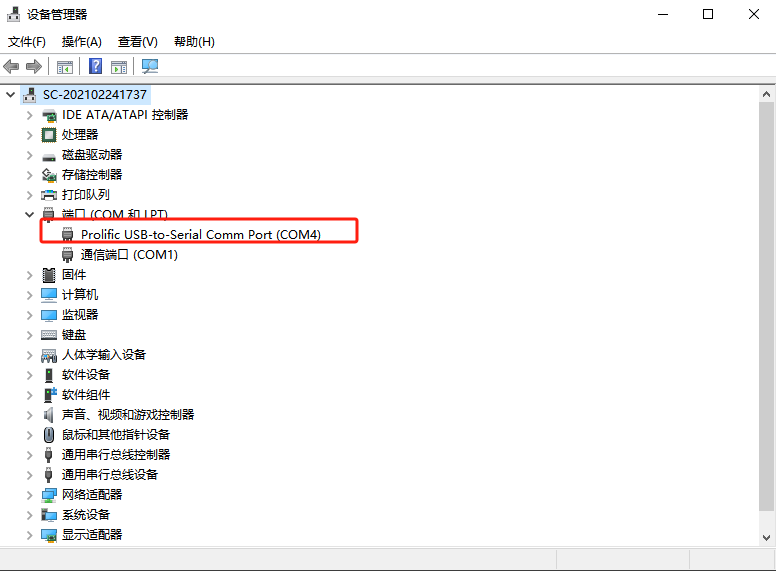
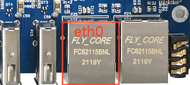
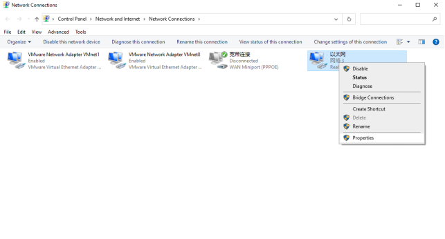
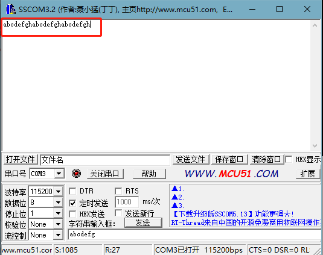
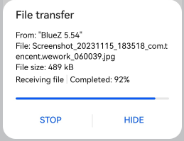

00_Linux4.1.15+Qt5.6软件使用手册
发布版本：V1.1
日期：2024-11-13
文件密级：□绝密 □秘密 □内部资料 ■公开
免责声明
本手册版权归保定飞凌嵌入式技术有限公司所有。未经本公司的书面许可，任何单位和个人无权以任何形式复制、传播、转载本手册的任何部分，违者将被追究法律责任。
保定飞凌嵌入式有限公司所提供的所有服务内容旨在协助用户加速产品的研发进度，在服务过程中所提供的任何程序、文档、测试结果、方案、支持等资料和信息，都仅供参考，用户有权不使用或自行参考修改，本公司不提供任何的完整性、可靠性等保证，若在用户使用过程中因任何原因造成的特别的、偶然的或间接的损失，本公司不承担任何责任。
概述
本手册以使用户快速熟悉产品，了解接口功能和测试方法为目的，主要讲述了开发板接口功能的测试，烧写镜像方法，以及使用过程中出现的一些问题如何排查。在测试过程中，对一些命令进行了注释，方便用户理解，以实用够用为主。
本手册一共分为4部分：
l 第一部分产品的整体概述，简单介绍了开发板在接口资源、内核源码中相关驱动路径、开发板支持的烧写和启动方式，以及资料中重点部分的说明；
l 第二部分产品的快速开机启动，可采用串口登录和网络登录两种方式；
l 第三部分产品的使用功能介绍，分为多个章节介绍，包括了终端中命令行进行功能测试和QT桌面进行功能测试两大部分；
l 第四部分产品的镜像更新，主要描述更新镜像到存储设备的方法，用户可根据实际情况选择对应的烧录方式。
适用范围
本文主要适用于飞凌OKMX6ULL平台Linux4.1.15操作系统，其他平台也可以参考，但是不同平台之间会存在差异，需客户自行修改以适应自己的使用。
修订记录
版本号 |
修改日期 |
修改说明 |
修改人 |
|---|---|---|---|
V1.0 |
2024.6.11 |
建档 |
王海龙 |
V1.1 |
2024.11.13 |
修改WM8960音频芯片设置音频参数 |
宋迎新 |
01_开发板简介
1.1 OKMX6ULL-C开发板简介
OKMX6ULL-C开发板采用核心板+底板结构，基于NXP 公司的i.MX6ULL低功耗处理器设计，运行主频800MHz，ARM Cortex-A7架构。独特的电源管理架构相比ARM9系列核心板功耗更低。核心板功能接口资源丰富，提供多种外设接口，如CAN、WIFI、USB、UART、IIC和以太网等。

请阅读：
本软件手册中不再对硬件参数进行叙述，在参考本手册进行软件开发前请阅读“硬件资料\用户手册”路径下的“OKMX6ULL-C_硬件手册”，以了解产品命名规则和您所使用产品的硬件配置信息，这样有助于您对本产品的使用。
1.2 烧写及启动设置
OKMX6ULL-C支持USB-OTG和TF卡两种烧写方式，支持EMMC启动方式，使用拨码开关来区分（如下图所示为EMMC启动）：

拨码 |
1 |
2 |
3 |
4 |
|---|---|---|---|---|
SD 卡烧写 |
OFF |
OFF |
ON |
ON |
USB OTG烧写 |
ON |
ON |
OFF |
OFF |
EMMC启动 |
OFF |
OFF |
OFF |
OFF |
1.3 Linux4.1.15系统软件资源特性
设备 |
驱动程序源代码在内核中的位置 |
设备名 |
|---|---|---|
网卡驱动 |
drivers/net/ethernet/freescale/fec_main.c |
/sys/class/net/eth* |
LCD 背光驱动 |
drivers/video/backlight/pwm_bl.c |
/sys/class/backlight |
LED 驱动 |
drivers/leds/leds-gpio.c |
/sys/class/leds/ |
USB接口U盘 |
drivers/usb/chipidea/ci_hdrc_imx.c |
/dev/sdx |
USB 4G |
drivers/usb/serial/ |
/dev/ttyUSB* |
USB Camera |
drivers/media/usb/uvc/uvc_video.c |
/dev/videox |
SD卡驱动 |
drivers/mmc/host/sdhci-esdhc-imx.c |
/dev/block/mmcblk0pX |
LCD FrameBuffer |
drivers/video/fbdev/mxsfb.c |
/dev/fb0 |
ft5x06电容触摸 |
drivers/input/touchsrcreen/edt-ft5x06.c |
/dev/input/eventx |
gt9xx电容触摸 |
drivers/input/touchscreen/ gt9xx.c |
dev/input/eventx |
RTC实时时钟驱动 |
drivers/rtc/rtc-rx8010.c |
/dev/rtcx |
串口驱动 |
drivers/tty/serial/imx.c |
/dev/ttymxc* |
看门狗驱动 |
drivers/watchdog/imx2_wdt.c |
/dev/watchdog |
CAN驱动 |
drivers/net/can/flexcan.c |
/sys/class/net/can* |
WIFI |
drivers/net/wireless/realtek |
wlan0 |
音频驱动 |
sound/soc/ |
/dev/snd/ |
SPI |
drivers/spi/spidev.c |
/dev/spidev0.0等 |
MCP2515 |
drivers/net/can/spi/mcp251x.c |
/dev/canx |
ADC |
drivers/iio/adc/vf610_adc.c |
iio:device0 |
02_开发板快速启动
2.1 开机前的准备
OKMX6ULL-C开发板有串口登录和网络登录两种系统登录方式，系统开机前硬件准备：
5V3A DC电源线
Type-C数据线（串口登录和USB烧录使用）
网线（网络登录使用）
检查启动方式拨码开关
请检查您开发板上的拨码开关，确认已经拨到想要的启动方式，启动方式设置请参考“1.3 烧写及启动设置”。
2.2 串口登录方式
2.2.1 串口登录
说明：
串口设置：波特率115200、数据位8、停止位1、无校验位、无流控制。
串口****终端登陆使用root用户，无密码。若需修改密码参考:3.1.4.1 FTP服务
软件需求：PC端Windows系统需要安装超级终端软件，超级终端软件有多种，可自行使用自己熟悉的串口终端软件。
以下以putty为例介绍终端的设置方式：
**步骤一：**使用串口线连接开发板和PC机，确认连接电脑的串口端口号，从“设备管理器”中查看串口端口号，以电脑实际识别的端口号为准。

**步骤二：**打开putty并设置，serial line根据使用的电脑COM口设置，波特率115200


**步骤三：**登录账户名为root，无密码
Freescale i.MX Release Distro 4.1.15-2.0.1 fl-imx6ull /dev/ttymxc0
fl-imx6ull login: root
**步骤四：**查看内核版本信息
root@fl-imx6ull:~# uname -a
Linux fl-imx6ull 4.1.15-00047-g6c1ab7a #3 SMP PREEMPT Wed Mar 9 09:42:35 CST 2022 armv7l armv7l armv7l GNU/Linux
从打印信息中可以看出，核心板内烧录的为linux4.1.15相关镜像
2.2.2 串口登录常见问题
电脑端口没有串口的可以通过USB转串口线与开发板连接，使用USB转串口线接需要安装对应的驱动程序。
建议使用质量好串口线以避免出现乱码情况。
2.3 网络登录方式
2.3.1 网络连接测试
说明：console文件系统：默认出厂eth0的IP为192.168.0.232，eth1的IP为192.168.1.232
如果想修改默认IP，请修改/etc/network/interfaces
qt文件系统：默认出厂为动态获取IP，如需修改为静态IP，可在/etc/rc.local文件中添加如下 命令进行设置：ifconfig eth0 192.168.0.232
开发板和电脑通过网线连接，测试网络连接状态，以开发板的eth0网卡为例(设置测试用电脑IP为192.168.0.58），以下在开发板串口登录方式下操作：
在进行网络登录前，需要先确保电脑和开发板直接的网络连接正常，可通过ping指令测试电脑和开发板的连接状态。具体方法操作如下：
将开发板的eth0和电脑通过网线连接，给开发板上电，内核启动后核心板上会有蓝色心跳灯闪烁，与电脑连接的网卡在正常启动后网卡灯快速闪烁，此时可以测试网络连接。

2、关闭电脑防火墙，打开电脑的运行命令

3、使用cmd打开电脑管理员界面，使用ping指令测试电脑和开发板的网络连接状态

有数据返回，网络连接正常。
2.3.2 SSH
说明：
默认出厂使用SSH登录的账户：root密码:无。
文件系统中移植的SSH是由dropbear实现，是一个相对较小的SSH服务器和客户端。开发板作为SSH服务器，其他主机可以
对Linux主机通过SSH访问开发板、windows主机通过SSH访问开发板两种方法进行操作说明，用户可根据实际情况设置账户密码后再操作，具体以实际情况的打印信息为准。
Linux主机通过SSH访问开发板
Linux主机需要先安装并开启SSH服务，才能通过SSH访问开发板，搭建方法可以参考应用笔记中相关文件，本次使用ubuntu开发环境作为Linux主机，此方法需要在Linux主机中进行操作。
1、配置信息：
Linux主机：IP为192.168.0.27，账户名为forlinx，主机名为ubuntu
开发板：IP为192.168.0.232，账户名为root，主机名为fl-imx6ull
2、测试Linux主机和开发板之间的网络连接状态
forlinx@ubuntu:~$ ping -c 5 192.168.0.232 //-c 5指定ping5次
PING 192.168.0.232 (192.168.0.232) 56(84) bytes of data.
64 bytes from 192.168.0.232: icmp_seq=1 ttl=128 time=0.557 ms
64 bytes from 192.168.0.232: icmp_seq=2 ttl=128 time=0.562 ms
64 bytes from 192.168.0.232: icmp_seq=3 ttl=128 time=0.685 ms
64 bytes from 192.168.0.232: icmp_seq=4 ttl=128 time=0.495 ms
64 bytes from 192.168.0.232: icmp_seq=5 ttl=128 time=1.29 ms
--- 192.168.0.232 ping statistics ---
5 packets transmitted, 5 received, 0% packet loss, time 4074ms
rtt min/avg/max/mdev = 0.495/0.718/1.291/0.293 ms
3、Linux主机通过SSH访问开发板
forlinx@ubuntu:~# ssh root@192.168.0.232
The authenticity of host '192.168.0.232 (192.168.0.232)' can't be established.
RSA key fingerprint is 8c:b8:9e:01:06:03:fb:f8:4c:4f:dd:db:79:28:d7:02.
Are you sure you want to continue connecting (yes/no)? yes //输入yes
Warning: Permanently added '192.168.0.232' (RSA) to the list of known hosts.
-sh: /home/root: Is a directory
root@fl-imx6ull:~# //通过主机名可以看出SSH登录成功
通过账户信息可以确定ssh登录成功
4、退出SSH访问
root@fl-imx6ull: ~$ logout //退出SSH登录
Connection to 192.168.0.232 closed.
forlinx@ubuntu:~$ //通过主机名可以退出SSH登录成功
Windows主机通过SSH访问开发板

点击“Open”,出现如下对话框，点击“是”进入登录界面

Login as：root
-sh: /home/root: Is a directory
root@fl-imx6ull:~#
2.4 屏幕选择
OKMX6ULL-S平台支持4.3吋/5.6吋/7吋/8吋/10.4吋电阻屏，7吋电容屏，10.1吋LVDS的显示。系统启动默认使用的配置是7吋LCD的1024x600显示。
注意：使用飞凌的10.4吋（800x600）电阻屏时，请参考3.1.13.3触摸章节进行修改，默认为8吋屏800x600电阻触摸方向。
不同尺寸及不同分辨率的LCD显示，可以在启动阶段，通过U-boot菜单来选择。具体方法如下：
打开串口调试终端putty，开发板上电后按**空格键**进入菜单首页：

Uboot一级菜单功能选项如下表：
序号 |
功能选项 |
|---|---|
1 |
进入到屏幕选择界面（出厂默认选择7寸-1024x600LCD显示） |
2 |
进入是屏幕校准设置界面 |
9 |
进入到boot的命令行模式 |
0 |
进行reset复位操作 |
输入**1**进入屏幕选择菜单(Switch panel)，选择相应屏幕后系统重启：

根据菜单提示，选择相应选项来支持不同尺寸和分辨率的LCD显示。菜单的第1列为对应显示的菜单选择序号，第2列为屏幕支持的分辨率支持，第3列为系统屏幕的尺寸及类型（其中的c和r分别对应电容屏和电阻屏幕）。示例：如果需要选择800x480分辨率的7吋电容屏则需要选择1选项，终端界面输入数字1即可。
**注意：**若使用我司自适应的屏幕则“屏幕选择菜单”将不可进入。
输入**<font style="color:#FF0000;">2</font>**进入屏幕校准使能菜单(Touch calibration)，选择相应选项后系统直接启动：

2.5 触摸校准
烧写Qt filesystem后，系统第一次启动时需要对LCD显示进行校准，依次触摸屏幕上的“+”位置完成校准，再次启动后不会在出现校准界面。
2.5.1 重新触摸校准
如需要重新校准屏幕，有如下两种方法：
方法一：
执行以下命令删除原校准文件：
root@fl-imx6ull:~# rm -rf /etc/pointercal.xinput
root@fl-imx6ull:~# sync
硬件reset后或是软件reboot后，根据提示校准即可。
方法二：
用QT程序”Calibrate Touchscreen”进行校准，操作方法如下：
开发板启动后，屏幕显示默认进入如下图QT桌面

2、点击菜单栏中的Forlinx，会出现下拉菜单，选择Utilties

3、选择Calibrate Touchscreen进入屏幕校准界面

4、出现如下界面，依次触摸屏幕上的“+”位置完成校准：

2.6 系统分区
Linux 操作系统的 8G eMMC 分区信息：
分区 |
名称 |
偏移 |
大小 |
文件系统 |
内容 |
|---|---|---|---|---|---|
/dev/mmcblk1boot0 |
Bootloader |
1KB |
2MB |
RAW |
bootloader |
/dev/mmcblk1p1 |
内核 |
10MB |
500MB |
vfat |
Kernel DTB等 |
/dev/mmcblk1p2 |
文件系统分区 |
Follow Boot |
剩余 |
ext3 |
根文件系统 |
出厂默认磁盘使用情况（使用的qt文件系统），仅供参考，具体参数请以实际为准。
root@fl-imx6ull:~# df -m
Filesystem 1M-blocks Used Available Use% Mounted on
/dev/root 6621 750 5529 12% /
devtmpfs 79 1 79 1% /dev
tmpfs 1 0 1 0% /mnt/.psplash
tmpfs 239 1 239 1% /run
tmpfs 239 1 239 1% /var/volatile
/dev/mmcblk1p1 500 15 486 3% /run/media/mmcblk1p1
不接任何外设情况下的内存使用清楚，仅供参考，具体参数请以实际为准。
root@fl-imx6ull:~# free
total used free shared buff/cache available
Mem: 489520 28984 407520 1040 53016 392360
Swap: 0 0 0
2.7 系统关闭
一般情况下直接关闭电源即可，如果有数据存储、功能使用等操作，操作过程中不要随意断电，以防出现文件不可逆损坏，只能重新烧写固件。未确保数据完全写入，可输入 sync 命令完成数据同步后再关闭电源。
注意：用户依据核心板设计的产品，若在使用中存在意外掉电导致系统异常关闭的情景，可在设计中加入掉电保护等措施。
03_开发板命令行功能测试
注意：该产品核心板支持的功能不局限手册中的提到的功能，飞凌仅对手册中的功能项目做测试验证，手册中未说明的功能不予以保证，用户可自行测试验证。
此章节主要说明开发板外扩接口的使用方法。
3.1 命令行功能测试
命令行测试程序源码路径：用户资料/Linux/测试程序源码
本节测试所用到的测试程序在飞凌提供的Demo中已有集成，故不做文件来源说明，直接进行命令操作。
3.1.1 SDHC/MMC卡驱动测试
说明：
不支持NTFS格式的文件系统，若不清楚SD卡格式，建议使用前将其格式化为FAT32格式。
SD卡挂载目录为/run/media，支持热插拔，终端会打印关于SD卡的信息。
不同的SD卡显示信息可能会有差别，本公司采用闪迪8G的SD卡进行测试。
CPU支持的MMC数据传输模式如下图

SD卡插入开发板的SD卡槽后，系统会自动检查并挂载SD卡，挂载成功后，可对SD卡进行读写操作。
1、插上8G SD卡，正常挂载后从打印信息可以看到SD卡挂载后的设备名，打印信息如下：
root@fl-imx6ull:~# mmc0: host does not support reading read-only switch, assuming write-enable
mmc0: Problem setting current limit!
mmc0: new ultra high speed DDR50 SDHC card at address aaaa
mmcblk0: mmc0:aaaa SS08G 7.40 GiB
mmcblk0: p1 //挂载后的文件名为mmcblk0p1
FAT-fs (mmcblk0p1): Volume was not properly unmounted. Some data may be corrupt. Please run fsck.
2、/run/media为SD卡的挂载目录，查看该目录下的文件：
root@fl-imx6ull:~# ls /run/media //列出/run/media目录下的文件
打印信息如下，mmcblk0p1为SD卡挂载后的文件名
mmcblk0p1 mmcblk1p1
3、查看SD卡中的文件，命令如下：
root@fl-imx6ull:~# ls -l /run/media/mmcblk0p1 //列出/run/media/mmcblk0p1目录下文件属性
打印信息如下：
drwxr-xr-x 2 root root 4096 Jan 22 2016 bin
drwxr-xr-x 2 root root 4096 Feb 21 2016 system
4、往 SD 卡中写入文件,命令如下,写1到test.txt 文件中：
root@fl-imx6ull:~# echo 1 > /run/media/mmcblk0p1/test.txt //写1到test.txt 文件中
root@fl-imx6ull:~# sync //文件同步
root@fl-imx6ull:~# cat /run/media/mmcblk0p1/test.txt //读取 SD 卡中test.txt 文件
1
会读到刚才我们写入的1。
5、SD卡使用完成后，在弹出SD卡前，需要使用umount卸载SD
root@fl-imx6ull:~# umount /run/media/mmcblk0p1
注意：退出SD卡挂载路径后再插拔SD卡
3.1.2 USB接口测试
3.1.2.1 USB HOST接口存储测试
说明：
支持USB鼠标**、USB键盘、U盘设备的热插拔。**
使用U盘测试时，建议用格式化工具将其格式化为能被linux系统识别的FAT32格式。
目前U盘测试支持到32G，32G以上并未测试。
U盘挂载目录为/run/media

开发板上有三个USB HOST接口，可选择任意一个进行测试，插入U盘同时终端会打印相关信息，由于存在很多种U盘，显示的信息可能会有差别，以实际打印信息为主。系统会自动检查并挂载U盘，挂载成功后，可对U盘进行读写操作。
1、插入U盘，显示如下的信息：
root@fl-imx6ull:~# usb 1-1.3: new high-speed USB device number 5 using ci_hdrc
usb-storage 1-1.3:1.0: USB Mass Storage device detected
scsi host1: usb-storage 1-1.3:1.0
scsi 1:0:0:0: Direct-Access Generic MassStorageClass 1536 PQ: 0 ANSI: 6
sd 1:0:0:0: [sda] 31116288 512-byte logical blocks: (7.94 GB/7.40 GiB)
sd 1:0:0:0: [sda] Write Protect is off
sd 1:0:0:0: [sda] Write cache: disabled, read cache: enabled, doesn't support DPO or FUA
sda: sda1 //挂载设备名为sda1
sd 1:0:0:0: [sda] Attached SCSI removable disk
FAT-fs (sda1): Volume was not properly unmounted. Some data may be corrupt. Please run fsck.
2、查看usb存储设备，/run/media为U盘的挂载目录，U盘挂载后的设备名为sda1，查的文件：
root@fl-imx6ull:~# ls -la /run/media/sda1/ //列出/run/media/sda1目录下的文件属性
drwxrwx--- 4 root disk 4096 Jan 1 1970 .
drwxr-xr-x 3 root root 60 May 2 13:57 ..
drwxrwx--- 2 root disk 4096 Mar 17 2020 sdrun
drwxrwx--- 2 root disk 4096 Mar 17 2020 target
3、往U盘中写入文件,命令如下,写2到test.txt 文件中：
root@fl-imx6ull:~# echo 2 > /run/media/sda1/test.txt //写2到test.txt 文件中
root@fl-imx6ull:~# sync //文件同步
读取 U 盘中test.txt 文件，命令如下：
root@fl-imx6ull:~# cat /run/media/sda1/test.txt //读取 U 盘中test.txt 文件
2
会读到刚才我们写入的2。
4、U盘使用完成后，在拔出U盘前，需要使用umount卸载
root@fl-imx6ull:~# umount /run/media/sda1
注意：退出SD卡挂载路径后再插拔SD卡
3.1.2.2 USB摄像头测试
**说明：本产品支持USB摄像头：**Webcam C270。
1、插入摄像头之前，通过lsusb指令查看USB状态和/dev下设备节点状态
root@fl-imx6ull:~# lsusb
打印信息如下：
Bus 001 Device 003: ID 0bda:b720
Bus 001 Device 002: ID 0424:2514
Bus 001 Device 001: ID 1d6b:0002
插入摄像头之前，查看video相关的设备节点
root@fl-imx6ull:~# ls /dev/video*
打印信息如下，
/dev/video0 /dev/video1
2、插入指定的USB摄像头，再次输入命令查看USB状态，可以看到插入的USB摄像头信息。
root@fl-imx6ull:~# lsusb
打印信息如下，会出现新的usb设备的vid和pid：
Bus 001 Device 003: ID 0bda:b720
Bus 001 Device 004: ID 046d:0825 //该usb摄像头的vid和pid
Bus 001 Device 002: ID 0424:2514
Bus 001 Device 001: ID 1d6b:0002
输入命令查看USB摄像头的设备节点，
root@fl-imx6ull:~# ls /dev/video*
打印信息如下，可见新增设备节点video2即为刚才插入的usb设备：
/dev/video0 /dev/video1 /dev/video2
3、输入命令查看摄像头支持的分辨率和帧速率
运行测试程序luvcview，-d为对应的设备文件，-L为查询有效的图像格式
root@fl-imx6ull:~# fltest_cmd_luvcivew -d /dev/video2 -L
打印信息如下：
luvcview version v0.1
starting process
video /dev/video2
/dev/video2 does not support read i/o
{ pixelformat = 'YUYV', description = 'YUV 4:2:2 (YUYV)' }
{ discrete: width = 640, height = 480 }
Time interval between frame: 1/30, 1/25, 1/20, 1/15, 1/10, 1/5,
{ discrete: width = 160, height = 120 }
Time interval between frame: 1/30, 1/25, 1/20, 1/15, 1/10, 1/5,
{ discrete: width = 176, height = 144 }
Time interval between frame: 1/30, 1/25, 1/20, 1/15, 1/10, 1/5,
{ discrete: width = 320, height = 176 }
Time interval between frame: 1/30, 1/25, 1/20, 1/15, 1/10, 1/5,
{ discrete: width = 320, height = 240 }
Time interval between frame: 1/30, 1/25, 1/20, 1/15, 1/10, 1/5,
{ discrete: width = 352, height = 288 }
Time interval between frame: 1/30, 1/25, 1/20, 1/15, 1/10, 1/5,
{ discrete: width = 432, height = 240 }
Time interval between frame: 1/30, 1/25, 1/20, 1/15, 1/10, 1/5,
{ discrete: width = 544, height = 288 }
Time interval between frame: 1/30, 1/25, 1/20, 1/15, 1/10, 1/5,
{ discrete: width = 640, height = 360 }
Time interval between frame: 1/30, 1/25, 1/20, 1/15, 1/10, 1/5,
{ discrete: width = 752, height = 416 }
Time interval between frame: 1/25, 1/20, 1/15, 1/10, 1/5,
{ discrete: width = 800, height = 448 }
Time interval between frame: 1/25, 1/20, 1/15, 1/10, 1/5,
{ discrete: width = 800, height = 600 }
Time interval between frame: 1/20, 1/15, 1/10, 1/5,
{ discrete: width = 864, height = 480 }
Time interval between frame: 1/20, 1/15, 1/10, 1/5,
{ discrete: width = 960, height = 544 }
Time interval between frame: 1/15, 1/10, 1/5,
{ discrete: width = 960, height = 720 }
Time interval between frame: 1/10, 1/5,
{ discrete: width = 1024, height = 576 }
Time interval between frame: 1/10, 1/5,
{ discrete: width = 1184, height = 656 }
Time interval between frame: 1/10, 1/5,
{ discrete: width = 1280, height = 720 }
Time interval between frame: 1/10, 1/5,
{ discrete: width = 1280, height = 960 }
Time interval between frame: 2/15, 1/5,
{ pixelformat = 'MJPG', description = 'MJPEG' }
{ discrete: width = 640, height = 480 }
Time interval between frame: 1/30, 1/25, 1/20, 1/15, 1/10, 1/5,
{ discrete: width = 160, height = 120 }
Time interval between frame: 1/30, 1/25, 1/20, 1/15, 1/10, 1/5,
{ discrete: width = 176, height = 144 }
Time interval between frame: 1/30, 1/25, 1/20, 1/15, 1/10, 1/5,
{ discrete: width = 320, height = 176 }
Time interval between frame: 1/30, 1/25, 1/20, 1/15, 1/10, 1/5,
{ discrete: width = 320, height = 240 }
Time interval between frame: 1/30, 1/25, 1/20, 1/15, 1/10, 1/5,
{ discrete: width = 352, height = 288 }
Time interval between frame: 1/30, 1/25, 1/20, 1/15, 1/10, 1/5,
{ discrete: width = 432, height = 240 }
Time interval between frame: 1/30, 1/25, 1/20, 1/15, 1/10, 1/5,
{ discrete: width = 544, height = 288 }
Time interval between frame: 1/30, 1/25, 1/20, 1/15, 1/10, 1/5,
{ discrete: width = 640, height = 360 }
Time interval between frame: 1/30, 1/25, 1/20, 1/15, 1/10, 1/5,
{ discrete: width = 752, height = 416 }
Time interval between frame: 1/30, 1/25, 1/20, 1/15, 1/10, 1/5,
{ discrete: width = 800, height = 448 }
Time interval between frame: 1/30, 1/25, 1/20, 1/15, 1/10, 1/5,
{ discrete: width = 800, height = 600 }
Time interval between frame: 1/30, 1/25, 1/20, 1/15, 1/10, 1/5,
{ discrete: width = 864, height = 480 }
Time interval between frame: 1/30, 1/25, 1/20, 1/15, 1/10, 1/5,
Time interval between frame: 1/30, 1/25, 1/20, 1/15, 1/10, 1/5,
Time interval between frame: 1/30, 1/25, 1/20, 1/15, 1/10, 1/5,
{ discrete: width = 960, height = 720 }
Time interval between frame: 1/30, 1/25, 1/20, 1/15, 1/10, 1/5,
{ discrete: width = 1024, height = 576 }
Time interval between frame: 1/30, 1/25, 1/20, 1/15, 1/10, 1/5,
{ discrete: width = 1184, height = 656 }
Time interval between frame: 1/30, 1/25, 1/20, 1/15, 1/10, 1/5,
{ discrete: width = 1280, height = 720 }
Time interval between frame: 1/30, 1/25, 1/20, 1/15, 1/10, 1/5,
{ discrete: width = 1280, height = 960 }
Time interval between frame: 1/30, 1/25, 1/20, 1/15, 1/10, 1/5,
4、输入命令进行YUV模式图像采集，可在液晶屏上预览采集的图像。
-d对应的设备文件名，-f图像模式为yuv，-s图像分辨率为800x448，-i帧速率为25fps
root@fl-imx6ull:~# fltest_cmd_luvcivew -d /dev/video2 -f yuv -s 800x448 -i 25 //注意需要根据屏幕选择成像大小。
打印信息如下：
luvcview version v0.1
size width: 800 height: 448
interval: 25 fps
starting process
video /dev/video2
get picture !
vinfo: xoffset:0 yoffset:0 bits_per_pixel:16 xres:800 yres:480
输入命令进行MJPEG模式图像采集，可在液晶屏上预览采集的图像，在该模式下，采集数据的同时 也在进行录制，录制的文件名为xxx.avi，保存在执行命令的目录下，该视频文件使用常用播放器。
-d对应的设备文件名，-f图像模式为jpg，-s图像分辨率为800x448，-i帧速率为30fps
root@fl-imx6ull:~# fltest_cmd_luvcivew -d /dev/video2 -f jpg -s 800x448 -i 30
打印信息如下：
luvcview version v0.1
size width: 800 height: 448
interval: 30 fps
video /dev/video2
format asked unavailable get width 640 height 480
vinfo: xoffset:0 yoffset:0 bits_per_pixel:32 xres:800 yres:480
recording to video.avi
find DRI
get picture !
3.1.3 有线网络测试
3.1.3.1 IPV4基本命令测试
说明：
OKMX6ULL-C 有eth0、eth1两路网卡。
console版文件系统：开机默认eth0 IP为192.168.10.232，eth1 IP为192.168.1.232。如果修改IP请修改/etc/network/interfaces。
qt版文件系统：开机默认动态获取IP。如需修改为静态IP，可在/etc/rc.local文件中添加如下命令进行设置：ifconfig eth0 192.168.0.232
每个开发板的网络使用环境未必相同，本节测试示例中，网络环境如下。实际使用中，请按照实际网络环境自行进行配置。
底板丝印 |
软件设备 |
|---|---|
NET1 |
eth1 |
NET2 |
eth0 |
注意：eth1与eth0不能用于同一个局域网。
下面以eth0为例进行命令说明。
在Linux系统下，使用ifconfig命令可以显示或配置网络设备，使用ethtool查询及设置网卡参数。
设置IP地址 ，查看当前网卡详情：
root@fl-imx6ull:~# ifconfig eth0 192.168.1.120 //设置ip
root@fl-imx6ull:~# ifconfig eth0 //查看设置后网络状况
eth0 Link encap:Ethernet HWaddr 3A:D9:93:8E:A8:A4
inet addr:192.168.1.120 Bcast:192.168.1.255 Mask:255.255.255.0
inet6 addr: fe80::38d9:93ff:fe8e:a8a4%2124311408/64 Scope:Link
inet6 addr: fec0::38d9:93ff:fe8e:a8a4%2124311408/64 Scope:Site
UP BROADCAST RUNNING MULTICAST MTU:1500 Metric:1
RX packets:28 errors:0 dropped:0 overruns:0 frame:0
TX packets:63 errors:0 dropped:0 overruns:0 carrier:0
collisions:0 txqueuelen:1000
RX bytes:11550 (11.2 KiB) TX bytes:11579 (11.3 KiB)
inet addr:192.168.1.120可以看出ip设置成功
动态分配IP地址
如果您的开发板与路由器连接，且路由器支持DHCP自动IP地址分配可以在超级终端里面输入命令：
root@fl-imx6ull:~# udhcpc -i eth0
udhcpc (v1.24.1) started
Sending discover...
Sending select for 192.168.20.101...
Lease of 192.168.20.101 obtained, lease time 86400
/etc/udhcpc.d/50default: Adding DNS 222.222.222.222
用来动态获取IP地址，“-i” 参数用来指定网卡名称，飞凌开发板有线网络的网卡名称为eth0。
/etc/resolv.conf文件中有dns服务器信息会被自动添加。
修改mac地址：
root@fl-imx6ull:~# ifconfig eth0 hw ether 00:00:00:00:00:01
root@fl-imx6ull:~# ifconfig eth0
eth0 Link encap:Ethernet HWaddr 00:00:00:00:00:01
inet addr:192.168.20.101 Bcast:192.168.20.255 Mask:255.255.255.0
inet6 addr: fec0::38d9:93ff:fe8e:a8a4%2128292720/64 Scope:Site
inet6 addr: fec0::200:ff:fe00:1%2128292720/64 Scope:Site
UP BROADCAST RUNNING MULTICAST MTU:1500 Metric:1
RX packets:85 errors:0 dropped:0 overruns:0 frame:0
TX packets:118 errors:0 dropped:0 overruns:0 carrier:0
collisions:0 txqueuelen:1000
RX bytes:22942 (22.4 KiB) TX bytes:22259 (21.7 KiB)
设置子网掩码：
root@fl-imx6ull:~# ifconfig eth0 netmask 255.255.255.0 //设置eth0子网掩码为255.255.255.0
root@fl-imx6ull:~# ifconfig eth0
eth0 Link encap:Ethernet HWaddr 00:00:00:00:00:01
inet addr:192.168.20.101 Bcast:192.168.20.255 Mask:255.255.255.0
inet6 addr: fec0::38d9:93ff:fe8e:a8a4%2128915312/64 Scope:Site
inet6 addr: fec0::200:ff:fe00:1%2128915312/64 Scope:Site
UP BROADCAST RUNNING MULTICAST MTU:1500 Metric:1
RX packets:107 errors:0 dropped:0 overruns:0 frame:0
TX packets:118 errors:0 dropped:0 overruns:0 carrier:0
collisions:0 txqueuelen:1000
RX bytes:25700 (25.0 KiB) TX bytes:22259 (21.7 KiB)
设置广播地址
root@fl-imx6ull:~# ifconfig eth0 broadcast 192.168.1.255//eth0广播地址设为192.168.1.255
root@fl-imx6ull:~# ifconfig eth0
打印信息如下：
eth0 Link encap:Ethernet HWaddr 00:00:00:00:00:01
inet addr:192.168.20.101 Bcast:192.168.1.255 Mask:255.255.255.0
inet6 addr: fec0::38d9:93ff:fe8e:a8a4%2123332464/64 Scope:Site
inet6 addr: fec0::200:ff:fe00:1%2123332464/64 Scope:Site
UP BROADCAST RUNNING MULTICAST MTU:1500 Metric:1
RX packets:111 errors:0 dropped:0 overruns:0 frame:0
TX packets:132 errors:0 dropped:0 overruns:0 carrier:0
collisions:0 txqueuelen:1000
RX bytes:26130 (25.5 KiB) TX bytes:25947 (25.3 KiB)
Bcast:192.168.1.255可以看出广播地址设置成功
添加/删除默认网关
添加默认网关：
root@fl-imx6ull:~# route add default gw 192.168.20.1
删除默认网关：
root@fl-imx6ull:~# route del default gw 192.168.20.1
关闭开启网卡
关闭eth0网卡：
root@fl-imx6ull:~# ifconfig eth0 down
开启eth0网卡：
root@fl-imx6ull:~# ifconfig eth0 up
fec 20b4000.ethernet eth0: Freescale FEC PHY driver [Micrel KSZ8081 or KSZ8091] (mii_bus:phy_addr=20b4000.ethernet:01, irq=-1)
root@fl-imx6ull:~# fec 20b4000.ethernet eth0: Link is Up - 100Mbps/Full - flow control rx/tx
3.1.3.2 IPV6测试
1、以eth1为例设置IPV6地址
root@fl-imx6ull:~# ip -6 addr add 2001:250:4000:2000::50/64 dev eth1 //设置IPV6地址
2、配置电脑 ipv6 地址
打开控制面板->网络和Internet->更改适配器选项出现如下界面：

选择以太网，右击选择属性。

将 ipv4 关掉，并打开 ipv6，双击“Internet协议版本6（TCP/IPV6）”，修改下图：

将开发板和电脑用网线直连，使用ping6命令测试如下：
root@fl-imx6ull:~# ping6 2001:250:4000:2000::49
PING 2001:250:4000:2000::49(2001:250:4000:2000::49) 56 data bytes
64 bytes from 2001:250:4000:2000::49: icmp_seq=1 ttl=128 time=1.43 ms
64 bytes from 2001:250:4000:2000::49: icmp_seq=2 ttl=128 time=0.399 ms
64 bytes from 2001:250:4000:2000::49: icmp_seq=3 ttl=128 time=0.501 ms
^C
--- 2001:250:4000:2000::49 ping statistics ---
5 packets transmitted, 5 received, 0% packet loss, time 4006ms
rtt min/avg/max/mdev = 0.399/0.640/1.432/0.398 ms
3.1.3.3 USB转网络测试

1、将USB转以太网插入USB host接口，识别信息如下：
usb 1-1.3: new high-speed USB device number 8 using ci_hdrc
asix 1-1.3:1.0 eth2: register 'asix' at usb-ci_hdrc.1-1.3, ASIX AX88772B USB 2.0 Ethernet, 00:0e:c6:8f:9c:b7
IPv6: ADDRCONF(NETDEV_UP): eth2: link is not ready
2、测试方法参考IPV4基本命令测试。
3.1.4 以太网相关服务
3.1.4.1 FTP 服务
说明：
账户root，默认无密码
eth0网卡默认IP：192.168.0.232
测试前需保证开发板和电脑网络连接正常，参考“网络连接测试”，本章节不再赘述。
设置root用户密码，这里设置为forlinx
root@imx6ullevk:~# passwd root
Changing password for root
Enter the new password (minimum of 5 characters)
Please use a combination of upper and lower case letters and numbers.
New password:
Bad password: too simple.
Warning: weak password (enter it again to use it anyway).
New password:
Re-enter new password:
passwd: password changed.
2、电脑使用FileZilla登录开发板
创建“新站点”，主机输入开发板IP，加密方式选择只是用明文FTP，登陆类型选择正常，用户和密码为开发板的用户和密码，点击“连接”。


3.1.4.2 SSH 客户端测试
说明：
console版文件系统：开机默认eth0 IP为192.168.10.232，eth1 IP为192.168.1.232。
qt版文件系统：开机默认动态获取IP。
文件系统中移植dropbear是一个相对较小的SSH服务器和客户端，本节介绍开发板作为SSH客户端，对装有SSH服务器的Linux 主机进行访问，Linux主机搭建SSH服务的方法可以参考应用笔记中相关文件，本次使用ubuntu开发环境作为Linux主机。
配置信息：
开发板ip设置为：192.168.0.232
Linux 主机ip地址：192.168.0.149 账户名为forlinx，主机名为ubuntu
由开发板访问linux主机
root@fl-imx6ull:~# ssh forlinx@192.168.0.149 //192.168.0.149为linux主机IP地址
forlinx为linux主机用户名
Host '192.168.0.149' is not in the trusted hosts file.
(ecdsa-sha2-nistp256 fingerprint md5 93:ff:74:8a:ed:ba:fd:21:39:d9:87:93:ad:9e:19:6f)
Do you want to continue connecting? (y/n) y
forlinx@192.168.0.149's password:
Welcome to Ubuntu 14.04.5 LTS (GNU/Linux 4.4.0-31-generic x86_64)
* Documentation: https://help.ubuntu.com/
504 packages can be updated.
421 updates are security updates.
New release '16.04.6 LTS' available.
Run 'do-release-upgrade' to upgrade to it.
Last login: Mon Mar 23 12:50:22 2020 from 192.168.0.232
3.1.5 无线网络测试
3.1.5.1 WIFI 测试
WiFi支持：
模块 |
支持 |
|---|---|
RTL8188EUS |
WiFi |
RTL8723BU |
WiFi |
RTL8723DU |
WiFi |
3.1.5.1.1 USB WIFI RTL8188eus使用
说明：USB WIFI无线局域网卡是选配模块，如若有需求，请联系飞凌嵌入式销售人员。
以下对wifi模块在STA模式下，连接到无线网络的测试：
**步骤1：**开发板上电，启动Linux系统。
**步骤2：**连接USB WIFI到飞凌开发板的USB host接口。
步骤3：按照如下格式输入相应的参数：
-i表示wifi型号；
-s表示wifi热点名称；
-p表示密码，若无密码输入-p NONE；
路由器采用wpa加密方式。具体操作指令可查看wifi.sh脚本。
连接打印内容如下：
root@fl-imx6ull:~# fltest_cmd_wifi.sh -i 8188 -s forlinx -p xxxx
打印信息如下：
wifi 8188
ssid forlinx
pasw xxxx
usbcore: deregistering interface driver rtl8723bu
RTL871X: module exit start
usbcore: deregistering interface driver rtl8188eu
RTL871X: rtw_ndev_uninit(wlan1)
usb 1-1.3: reset high-speed USB device number 7 using ci_hdrc
RTL871X: module exit success
RTL871X: module init start
RTL871X: rtl8188eu v4.3.0.9_15178.20150907
RTL871X: build time: Mar 25 2020 02:23:46
bFWReady == _FALSE call reset 8051...
RTL871X: rtw_ndev_init(wlan0)
usbcore: registered new interface driver rtl8188eu
RTL871X: module init ret=0
==> rtl8188e_iol_efuse_patch
IPv6: ADDRCONF(NETDEV_UP): wlan0: link is not ready
ps: invalid option -- 'f'
BusyBox v1.24.1 (2019-04-27 02:24:01 CST) multi-call binary.
Usage: ps
Successfully initialized wpa_supplicant
rfkill: Cannot open RFKILL controRTL871X: set bssid:00:00:00:00:00:00
l device
RTL871X: set ssid [g▒isQ▒J▒)ͺ▒▒▒▒F|▒T▒▒vZ.c3▒ɚ<▒▒▒▒] fw_state=0x00000008
ioctl[SIOCSIWAP]: Operation not permitted
ioctl[SIOCGIWSCAN]: Resource temporarily unavailable
ioctl[SIOCGIWSCAN]: Resource temporarily unavailable
RTL871X: indicate disassoc
wlan0: Trying to associate with 04:d7:a5:84:fa:40 (SSID='forlinx' freq=2437 MHz)
RTL871X: set ssid [forlinx] fw_state=0x00000008
RTL871X: set bssid:04:d7:a5:84:fa:40
RTL871X: start auth
RTL871X: auth success, start assoc
RTL871X: assoc success
IPv6: ADDRCONF(NETDEV_CHANGE): wlan0: link becomes ready
RTL871X: recv eapol packet
wlan0: Associated with 04:d7:a5:84:fa:40
RTL871X: send eapol packet
RsvdPageNum: 8
udhcpc (v1.24.1) started
RTL871X: recv eapol packet
RTL871X: send eapol packet
RTL871X: recv eapol packet
RTL871X: send eapol packet
RTL871X: set pairwise key camid:4, addr:04:d7:a5:84:fa:40, kid:0, type:AES
wlan0: WPA: Key negotiation completed with 04:d7:a5:84:fa:40 [PTKRTL871X: set group key camid:5, addr:04:d7:a5:84:fa:40, kid:2, type:AES
=CCMP GTK=CCMP]
wlan0: CTRL-EVENT-CONNECTED - Connection to 04:d7:a5:84:fa:40 completed [id=0 id_str=]
Sending discover...
Sending select for 192.168.4.129...
Lease of 192.168.4.129 obtained, lease time 36000
/etc/udhcpc.d/50default: Adding DNS 222.222.202.202
/etc/udhcpc.d/50default: Adding DNS 222.222.222.222
Finshed!
脚本运行完，能自动分配ip并添加DNS，则wifi连接成功。
**步骤5：**ping ip或者域名，命令如下。
root@fl-imx6ull:~# ping -c 4 www.baidu.com
PING www.baidu.com (220.181.38.149): 56 data bytes
64 bytes from 220.181.38.149: seq=0 ttl=51 time=26.648 ms
64 bytes from 220.181.38.149: seq=1 ttl=51 time=13.529 ms
64 bytes from 220.181.38.149: seq=2 ttl=51 time=15.656 ms
64 bytes from 220.181.38.149: seq=3 ttl=51 time=26.249 ms
--- www.baidu.com ping statistics ---
4 packets transmitted, 4 packets received, 0% packet loss
round-trip min/avg/max = 13.529/20.520/26.648 ms
**步骤6：**卸载已经加入内核的模块。
root@fl-imx6ull:~# rmmod 8188eu
打印信息如下：
RTL871X: module exit start
usbcore: deregistering interface driver rtl8188eu
RTL871X: indicate disassoc
RTL871X: rtw_cmd_thread: DriverStopped(1) SurpriseRemoved(0) break at line 478
wlan0: CTRL-EVENT-DISCONNECTED bssid=04:d7:a5:84:fa:40 reason=3 locally_generated=1
RTL871X: rtw_ndev_uninit(wlan0)
RTL871X: rtw_dev_unload: driver not in IPS
usb 1-1.3: reset high-speed USB device number 7 using ci_hdrc
RTL871X: module exit success
3.1.5.1.2 板载WIFI的使用
说明：
wifi频率为2.4G
兼容8723bu和8723du两种wifi驱动
默认路由器采用wpa加密方式。
如果开发板有板载的WIFI无线局域网卡，则焊接在评估板如图所示位置（下图为8723du）：

**步骤1：**检查开发板是否已经焊接该模块，正确焊接如上图。连接上天线。
**步骤2：**开发板上电，启动Linux系统,先使用lsmod查看模块加载状态：
root@fl-imx6ull:~# lsmod
Module Size Used by
mx6s_capture 14876 0
8723du 1313893 0 //默认wifi自动加载，8723du已加载成功
ov9650_camera 12446 0
注意：若开发板上焊接的是8723bu，使用lsmod会显示8723bu
以下以8723du为例进行测试描述：
步骤3：测试
STA模式
该模式即作为一个站点，连接到无线网络中，操作方法如下：
-i表示wifi型号；-s表示wifi热点名称；-p表示密码，若无密码输入-p NONE；路由器采用wpa加密方式，具体操作指令可查看wifi.sh脚本
root@fl-imx6ull:~# fltest_cmd_wifi.sh -i 8723du -s forlinx -p xxx //执行测试脚本
打印信息如下：
wifi 8723du
ssid forlinx
pasw xxx
usbcore: deregistering interface driver rtl8723du
usbcore: registered new interface driver rtl8723du
IPv6: ADDRCONF(NETDEV_UP): wlan0: link is not ready
Successfully initialized wpa_supplicant
rfkill: Cannot open RFKILL control device
udhcpc (v1.24.1) started
Sending discover...
wlan0: CTRL-EVENT-REGDOM-CHANGE init=BEACON_HINT type=UNKNOWN
wlan0: Trying to associate with 04:d7:a5:f9:26:1d (SSID='forlinx' freq=2427 MHz)
wlan0: Associated with 04:d7:a5:f9:26:1d
IPv6: ADDRCONF(NETDEV_CHANGE): wlan0: link becomes ready
wlan0: WPA: Key negotiation completed with 04:d7:a5:f9:26:1d [PTK=CCMP GTK=TKIP]
wlan0: CTRL-EVENT-CONNECTED - Connection to 04:d7:a5:f9:26:1d completed [id=0 id_str=]
nf_conntrack: automatic helper assignment is deprecated and it will be removed soon. Use the iptables CT target to attach helpers instead.
Sending discover...
Sending select for 192.168.5.186...
Lease of 192.168.5.186 obtained, lease time 1800
/etc/udhcpc.d/50default: Adding DNS 222.222.202.202
/etc/udhcpc.d/50default: Adding DNS 222.222.222.222
WLAN Finshed!
脚本运行完，能自动分配ip并生成DNS，则wifi连接成功。
ping ip或者域名，命令如下：
root@fl-imx6ull:~# ping -c 5 www.baidu.com
打印信息如下：
PING 192.168.4.1 (192.168.4.1): 56 data bytes
64 bytes from 192.168.4.1: seq=0 ttl=128 time=39.783 ms
64 bytes from 192.168.4.1: seq=1 ttl=128 time=81.529 ms
64 bytes from 192.168.4.1: seq=2 ttl=128 time=15.236 ms
64 bytes from 192.168.4.1: seq=3 ttl=128 time=12.076 ms
64 bytes from 192.168.4.1: seq=4 ttl=128 time=16.300 ms
--- 192.168.4.1 ping statistics ---
5 packets transmitted, 5 packets received, 0% packet loss
round-trip min/avg/max = 12.076/32.984/81.529 ms
wifi信号
查看WiFi信号方法如下：
root@fl-imx6ull:~# cat /proc/net/wireless | grep wlan0 | awk '{print $3}' //获取信号强度
78.
root@fl-imx6ull:~# cat /proc/net/wireless | grep wlan0 | awk '{print $4}' //获取信号质量,单位dBm
-68.
root@fl-imx6ull:~# cat /proc/net/wireless | grep wlan0 | awk '{print $5}' //网口背景噪声,单位dBm
-256.
AP模式
说明：
本模块支持AP模式，理论最大连接用户为8个。
本例为以太网eth0连接路由器说明，配置完以太网后，需要测试eth0是否可以连接外网，如果可以连接外网（方法参考“有线网卡”章节），请继续按照操作步骤执行，如果不可以请检查以太网或者路由器连接是否正常。
工作在AP模式下，手机等设备可以直接连接模块。
设置以太网IP，配置网络防火墙：
root@fl-imx6ull:~# udhcpc -i eth0 //自动分配IP，若以测试eth0网络正常，可不操作此步
root@fl-imx6ull:~# echo 1 > /proc/sys/net/ipv4/ip_forward //打开 IP 转发
root@fl-imx6ull:~# iptables -t nat -A POSTROUTING -o eth0 -j MASQUERADE//设置转发规则
设置WiFi的模式与IP
确保模块8723bu已经加载。
root@fl-imx6ull:~# ifconfig wlan0 up //打开WiFi
root@fl-imx6ull:~# ifconfig wlan0 192.168.0.10 netmask 255.255.255.0 //设置IP与子网掩码
root@fl-imx6ull:~# ifconfig wlan0 promisc //设置 wlan0 为混杂模式
开启AP
root@fl-imx6ull:~# udhcpd /etc/udhcpd/udhcpd.conf & //WiFi 地址、网关等配置信息
root@fl-imx6ull:~# hostapd -d /etc/hostapd/hostapd.conf & //加密方式、用户名、密码等设置
hostapd.conf文件中：ssid为用户名，/为密码
手机等移动终端可以通过WiFi连接到开发板的AP热点，开发板默认使用以下用户名和密码：
热点名：forlinxtest密码：1234567890
**步骤4：**卸载已经加入内核的模块：
root@fl-imx6ull:~# rmmod 8723du
usbcore: deregistering interface driver rtl8723du
wlan0: CTRL-EVENT-DISCONNECTED bssid=04:d7:a5:f9:26:1d reason=0
3.1.5.2 4G模块实现 IE上网
说明：
目前OKMX6ULL-C核心板支持移远EC20的4G模块。
3.1.5.2.1 EC20模块测试

4G指示灯状态 |
所指示的网络状态 |
|---|---|
慢闪（200ms 高/1800ms 低） |
找网状态 |
慢闪（1800ms 高/200ms 低） |
待机状态 |
快闪（125ms 高/125ms 低） |
数据传输模式 |
高电平 |
通话中 |
说明：
使用物联网卡测试时，需确认模组固件版本，低版本固件不支持，需升级EC20固件
拨号脚本quectel-CM 在/usr/bin目录下
有些物联网卡拨号时需要设置专用账号和密码，用户需根据实际情况调整指令
使用quectel-CM –help指令查看相关参数含义
1、连接好模块，开发板和模块上电后，可通过lsusb指令查看USB状态
root@imx6ulevk:~# lsusb
Bus 001 Device 004: ID 0bda:b720
Bus 001 Device 005: ID 2c7c:0125 //EC20的VID和PID
Bus 001 Device 002: ID 0424:2514
Bus 001 Device 001: ID 1d6b:0002
2、/dev下查看设备节点状态
root@imx6ulevk:~# ls /dev/ttyUSB*
/dev/ttyUSB0 /dev/ttyUSB1 /dev/ttyUSB2 /dev/ttyUSB3
3、EC20拨号:
root@fl-imx6ull:~# ifconfig eth0 down
root@fl-imx6ull:~# ifconfig eth1 down
root@fl-imx6ull:~# quectel-CM &
[1] 598
root@fl-imx6ull:/forlinx/cmdbin#[04-26_19:16:06:781] WCDMA<E_QConnectManager_Linux&Android_V1.1.34
[04-26_19:16:06:783] ./quectel-CM profile[1] = (null)/(null)/(null)/0, pincode = (null)
[04-26_19:16:06:790] Find /sys/bus/usb/devices/1-1.1 idVendor=2c7c idProduct=0125
[04-26_19:16:06:791] Find /sys/bus/usb/devices/1-1.1:1.4/net/eth2
[04-26_19:16:06:791] Find usbnet_adapter = eth2
[04-26_19:16:06:792] Find /sys/bus/usb/devices/1-1.1:1.4/GobiQMI/qcqmi2
[04-26_19:16:06:792] Find qmichannel = /dev/qcqmi2
[04-26_19:16:06:851] Get clientWDS = 7
[04-26_19:16:06:882] Get clientDMS = 8
[04-26_19:16:06:914] Get clientNAS = 9
[04-26_19:16:06:946] Get clientUIM = 10
[04-26_19:16:06:978] Get clientWDA = 11
[04-26_19:16:07:011] requestBaseBandVersion EC20CEHCLGR06A05M1G
//打印信息中的版本号为5Mxx支持物联网卡，如果为2Mxx则不支持
[04-26_19:16:07:106] requestGetSIMStatus SIMStatus: SIM_READY
[04-26_19:16:07:138] requestGetProfile[1] ctnet///0
[04-26_19:16:07:171] requestRegistrationState2 MCC: 460, MNC: 11, PS: Attached, DataCap: LTE
[04-26_19:16:07:202] requestQueryDataCall IPv4ConnectionStatus: DISCONNECTED
[04-26_19:16:07:266] requestRegistrationState2 MCC: 460, MNC: 11, PS: Attached, DataCap: LTE
[04-26_19:16:07:300] requestSetupDataCall WdsConnectionIPv4Handle: 0xe1645ec0
[04-26_19:16:07:394] requestQueryDataCall IPv4ConnectionStatus: CONNECTED
[04-26_19:16:07:427] ifconfig eth2 up
[04-26_19:16:07:471] busybox udhcpc -f -n -q -t 5 -i eth2
[04-26_19:16:07:506] udhcpc (v1.24.1) started
[04-26_19:16:07:631] Sending discover...
[04-26_19:16:07:691] Sending select for 172.29.86.131...
[04-26_19:16:07:751] Lease of 172.29.86.131 obtained, lease time 7200
[04-26_19:16:07:869] /etc/udhcpc.d/50default: Adding DNS 222.222.222.222
[04-26_19:16:07:869] /etc/udhcpc.d/50default: Adding DNS 222.222.202.202
连接成功之后，ping 百度测试：
root@fl-imx6ull:~# ping www.baidu.com -I eth2 -c 3
PING www.baidu.com (220.181.38.150): 56 data bytes
64 bytes from 220.181.38.150: seq=0 ttl=53 time=137.243 ms
64 bytes from 220.181.38.150: seq=1 ttl=53 time=51.239 ms
64 bytes from 220.181.38.150: seq=2 ttl=53 time=94.440 ms
--- www.baidu.com ping statistics ---
3 packets transmitted, 3 packets received, 0% packet loss
round-trip min/avg/max = 51.239/94.307/137.243 ms
4、4G模块断电/上电
注意：4G 模块默认开机为上电状态。
4G 模块断电：
root@fl-imx6ull:~# echo 137 > /sys/class/gpio/export
root@fl-imx6ull:~# echo out > /sys/class/gpio/gpio137/direction
root@fl-imx6ull:~# echo 0 > /sys/class/gpio/gpio137/value #4GEN power down
root@fl-imx6ull:~# usb 1-1.3: USB disconnect, device number 4
option1 ttyUSB0: GSM modem (1-port) converter now disconnected from ttyUSB0
option 1-1.3:1.0: device disconnected
option1 ttyUSB1: GSM modem (1-port) converter now disconnected from ttyUSB1
option 1-1.3:1.1: device disconnected
option1 ttyUSB2: GSM modem (1-port) converter now disconnected from ttyUSB2
option 1-1.3:1.2: device disconnected
option1 ttyUSB3: GSM modem (1-port) converter now disconnected from ttyUSB3
option 1-1.3:1.3: device disconnected
GobiNet 1-1.3:1.4 eth2: unregister 'GobiNet' usb-ci_hdrc.1-1.3, GobiNet Ethernet Device
4G 模块上电：
root@fl-imx6ull:~# echo 137 > /sys/class/gpio/export
root@fl-imx6ull:~# echo out > /sys/class/gpio/gpio137/direction
root@fl-imx6ull:~# echo 1 > /sys/class/gpio/gpio137/value #4GEN power down
root@fl-imx6ull:~# usb 1-1.3: new high-speed USB device number 5 using ci_hdrc
option 1-1.3:1.0: GSM modem (1-port) converter detected
usb 1-1.3: GSM modem (1-port) converter now attached to ttyUSB0
option 1-1.3:1.1: GSM modem (1-port) converter detected
usb 1-1.3: GSM modem (1-port) converter now attached to ttyUSB1
option 1-1.3:1.2: GSM modem (1-port) converter detected
usb 1-1.3: GSM modem (1-port) converter now attached to ttyUSB2
option 1-1.3:1.3: GSM modem (1-port) converter detected
usb 1-1.3: GSM modem (1-port) converter now attached to ttyUSB3
GobiNet 1-1.3:1.4 eth2: register 'GobiNet' at usb-ci_hdrc.1-1.3, GobiNet Ethernet Device, 1a:91:07:93:2c:66
GobiNet 1-1.3:1.4 eth2: kevent 12 may have been dropped
creating qcqmi2
GobiNet 1-1.3:1.4 eth2: kevent 12 may have been dropped
IPv6: ADDRCONF(NETDEV_UP): eth2: link is not ready
3.1.6 看门狗测试
看门狗是嵌入式系统中经常用到的功能。目前uboot和kernel都支持看门狗，默认出厂看门狗是关闭状态，以下分别在这两个阶段进行看门狗测试。
Uboot阶段的看门狗操作
开发板上电之后按空格键出现uboot菜单，输入0进入uboot命令行进行操作。
Uboot阶段开门狗默认关闭
=> setenv fl_wdt_en "1" //打开看门狗
=> setenv fl_wdt_timeout "60" //设置复位时间为60s，用户可以自行设定时间在10s~128s
=> saveenv //保存环境变量
Saving Environment to NAND...
Erasing NAND...
Erasing at 0x600000 -- 100% complete.
Writing to NAND... OK
关闭看门狗
=> setenv fl_wdt_en "0" //关闭看门狗
=> saveenv //保存环境变量
Saving Environment to NAND...
Erasing NAND...
Erasing at 0x600000 -- 100% complete.
Writing to NAND... OK
进入系统以后的看门狗操作
参数说明：
参数 |
含义 |
说明 |
|---|---|---|
settimeout |
开启看门狗，设置复位时间，不喂狗 |
复位时间设置需大于2s |
keepalive |
开启看门狗，设置复位时间，定时2s喂狗 |
复位时间设置需大于2s |
注意：测试时以上两个参数只能使用一个，可通过ps查看进程，保证只有一个fltest_wdt进程。
设置60s后超时重启。
root@fl-imx6ull:~# fltest_cmd_wdt /dev/watchdog settimeout 60 &
[1] 582
说明：超时时间可自行修改，如果超时时间为10s，则将命令中的60更改为10。可设置最小复位时间间隔为2s。
设置如果10s内系统不喂狗，则重启系统；wdttest命令设置参数keepalive后会每2s喂一次狗，如果删除wdttest后台则会造成系统在10s内不去喂狗而造成超时重启。
root@fl-imx6ul:~# fltest_cmd_wdt /dev/watchdog keepalive 10 &
[1] 584
root@fl-imx6ull:~# kill -9 584 //进程号需要根据实际情况进行修改
root@fl-imx6ul:~# watchdog watchdog0: watchdog did not stop!
说明：允许最大喂狗周期可自行修改，如果时间为40s，则将命令中的10更改为40。
3.1.7 RTC时钟驱动测试
注意：确保板子上已经安装了纽扣电池，并且电池电压正常
RTC 测试，主要通过使用 date 和 hwclock 工具设置软、硬件时间，测试当板子断电再上电的时候，软件时钟读取 RTC 时钟是否同步。
root@fl-imx6ull:~# date -u 031912002020.00 //设置软件时间
Thu Mar 19 12:00:00 UTC 2020
root@fl-imx6ull:~# hwclock -r //显示硬件时间
Fri May 3 17:50:51 2019 0.000000 seconds
root@fl-imx6ull:~# hwclock -w //将软件时间同步到硬件时间
Fri May 3 17:50:51 2019 0.000000 seconds
然后给板子断电再上电，进入系统后使用命令 date 读取系统时间，可以看到时间已经同步。
3.1.8 音/视频测试
OKMX6ULL-C 硬件上采用的WM8960音频芯片，飞凌也提供了NAU88C22音频芯片的设计方案。软件上使用主流音频框架ALSA（Advanced Linux Sound Architechture），为应用层提供了alsa-lib，应用程序调用提供的API就可以完成对底层的操作。用户可以使用文件系统内带的 ALSA 音频录制、播放、配置工具进行测试。
3.1.8.1 Phone/MIC 测试
开发板上提供了一个3.5mm音频插座，支持左右声道播放和MIC录音。

设置参数，输入下图中的命令：
root@fl-imx6ull:~# amixer sset Headphone 110,110 //配置耳机音量
root@fl-imx6ull:~# amixer cset name='Playback Volume' 255,255
root@fl-imx6ull:~# amixer cset name='Capture Volume' 0,31
root@fl-imx6ull:~# amixer sset 'Left Output Mixer PCM' on
root@fl-imx6ull:~# amixer sset 'Right Output Mixer PCM' on
root@fl-imx6ull:~# amixer cset name='Capture Volume' 63,63
root@fl-imx6ull:~# amixer cset name='ADC PCM Capture Volume' 220,220 //配置放音音量
root@fl-imx6ull:~# amixer cset name='Left Input Boost Mixer LINPUT2 Volume' 7
root@fl-imx6ull:~# amixer cset name='Left Input Boost Mixer LINPUT3 Volume' 7
root@fl-imx6ull:~# amixer cset name='Right Input Boost Mixer RINPUT1 Volume' 7
root@fl-imx6ull:~# amixer cset name='Right Input Boost Mixer RINPUT2 Volume' 7
root@fl-imx6ull:~# amixer sset 'Right Boost Mixer RINPUT1' off
NAU88C22音频芯片输入如下命令设置参数：
root@fl-imx6ull:~# amixer sset "PCM" 255
root@fl-imx6ull:~# amixer sset "Headphone" on
root@fl-imx6ull:~# amixer sset "Headphone" 63
放音测试
root@fl-imx6ull:~# aplay /home/root/test.wav
Playing WAVE '/forlinx/audio/wo.wav' : Signed 16 bit Little Endian, Rate 22050 Hz, Stereo
录音测试
-r：采样频率；-f：声音效果格式；-c：通道设置；-d：设置录音时间；record.wav :录音文件名称，arecord使用方法可通过arecord –help查看
root@fl-imx6ull:~# arecord -r 44100 -f S16_LE -c 2 -d 10 record.wav
Recording WAVE 'record.wav' : Signed 16 bit Little Endian, Rate 44100 Hz, Stereo
播放录音
root@fl-imx6ull:~# aplay record.wav
Playing WAVE 'record.wav' : Signed 16 bit Little Endian, Rate 44100 Hz, Stereo
3.1.8.2 Speaker测试
音频芯片WM8960内部自带的D类功放输出端由两个XH2.54-2P白色插座P22、P23引出，可驱动两只8Ω喇叭，最高输出功率为1W，如果需要外接更大的功放，只能从耳机插座获取信号，不能从喇叭接口获取信号。测试speaker时，不能插入耳机，使用如下命令进行测试：

root@fl-imx6ull:~# mplayer /home/root/test.mp3
打印信息如下：
MPlayer 1.3.0-5.3.0 (C) 2000-2016 MPlayer Team
Playing /forlinx/audio/test.mp3.
libavformat version 57.25.100 (internal)
Audio only file format detected.
Load subtitles in /forlinx/audio/
……
3.1.8.3 播放视频测试
由于cpu没有硬件多媒体解码器和cpu资源有限，播放的视频分辨率和帧数不高。
-fs：全屏播放；-vo fdbdev：视频驱动为Framebuffer Device；/forlinx/video/test.mp4为播放的视频文件，mplayer更多使用方法参考mplayer –help。
root@fl-imx6ull:~# mplayer -fs -vo fbdev /home/root/test.mp4
Creating config file: /home/root/.mplayer/config
MPlayer 1.3.0-5.3.0 (C) 2000-2016 MPlayer Team
Playing /home/root/test.mp4.
libavformat version 57.25.100 (internal)
libavformat file format detected.
[mov,mp4,m4a,3gp,3g2,mj2 @ 0x887550]Protocol name not provided, cannot determine if input is local or a network protocol, buffers and access patterns cannot be configured optimally without knowing the protocol
[lavf] stream 0: video (mpeg4), -vid 0
[lavf] stream 1: audio (aac), -aid 0, -alang und
VIDEO: [MP4V] 480x272 24bpp 23.976 fps 1077.9 kbps (131.6 kbyte/s)
==========================================================================
Opening video decoder: [ffmpeg] FFmpeg's libavcodec codec family
libavcodec version 57.24.102 (internal)
Selected video codec: [ffodivx] vfm: ffmpeg (FFmpeg MPEG-4)
==========================================================================
Clip info:
major_brand: isom
minor_version: 512
compatible_brands: isomiso2mp41
encoder: Lavf55.19.104
Load subtitles in /home/root/
==========================================================================
Opening audio decoder: [ffmpeg] FFmpeg/libavcodec audio decoders
AUDIO: 44100 Hz, 2 ch, floatle, 126.2 kbit/4.47% (ratio: 15775->352800)
Selected audio codec: [ffaac] afm: ffmpeg (FFmpeg AAC (MPEG-2/MPEG-4 Audio))
==========================================================================
[AO OSS] audio_setup: Can't open audio device /dev/dsp: No such file or directory
AO: [alsa] 44100Hz 2ch floatle (4 bytes per sample)
Starting playback...
Could not find matching colorspace - retrying with -vf scale...
Opening video filter: [scale]
Movie-Aspect is 1.78:1 - prescaling to correct movie aspect.
[swscaler @ 0xab8380]bicubic scaler, from yuv420p to bgra using C
[swscaler @ 0xab8380]No accelerated colorspace conversion found from yuv420p to bgra.
[swscaler @ 0xab8380]using unscaled yuv420p -> bgra special converter
VO: [fbdev] 480x272 => 484x272 BGRA [fs]
Movie-Aspect is 1.78:1 - prescaling to correct movie aspect.
[swscaler @ 0xab8380]No accelerated colorspace conversion found from yuv420p to bgra.
VO: [fbdev] 480x272 => 484x272 BGRA [fs]
A: 0.1 V: 0.0 A-V: 0.102 ct: 0.004 0/ 0 ??% ??% ??,?% 0 0
[VD_FFMPEG] DRI failure.
A: 20.0 V: 20.0 A-V: 0.005 ct: 0.068 0/ 0 24% 2% 5.2% 0 0
Exiting... (End of file)
按Ctrl +C可以停止播放视频，或者等待Exiting… (End of file) 视频播放停止。
3.1.9 UART串口测试
说明：
OKMX6ULL-C开发板默认设置了5个UART口，其中UART1作为Debug使用。UART2、 UART3、UART4、UART5作为普通串口使用(TTL电平)。
底板丝印 |
软件设备 |
|---|---|
UART2 |
ttymxc1 |
UART3 |
ttymxc2 |
UART4 |
Ttymxc3 |
UART5 |
Ttymxc4 |
目前测试的与电脑通讯最大波特率为256000
uart支持7和8bit数据位，1和2bit停止位
支持硬流控，使用方法见/应用笔记/硬流控的打开方法
支持奇偶校验，测试方法见/应用笔记/奇偶校验的方法
以开发板的UART2为例，通过TTL转USB模块连接到电脑，让开发板的UART和电脑串口工具软件之间进行数据收发，来进行串口测试。
开发板的UART2通过TTL转USB模块连接到电脑上，开发板上电后，在电脑设备管理器查看识别为COM3（用户以自己实际识别COM口设置参数）：

电脑端打开串口工具选择电脑识别的COM口，波特率115200，数据位8位，停止位1位，无校验，无流控，1s定时发送字符串abcdefg，设置好参数后打开串口：

3、开发板终端打开测试程序，进行收发测试，串口参数设置与串口工具的设置要一致，测试程序会自动发送字符串abcdefgh
root@fl-imx6ull:~# fltest_cmd_uart /dev/ttymxc1 115200
Welcome to TTYtest! Press Ctrl + 'c' to stop.
/dev/ttymxc1,creat thread 1993839728 sucess
/dev/ttymxc1,creat thread 1985451120 sucess
sendTotal= 9 num = 1 send = abcdefgh
recvTotal= 8 num = 1 recv = abcdefgh //接收到串口工具发送的信息
hex:0x61 0x62 0x63 0x64 0x65 0x66 0x67 0x68
sendTotal= 18 num = 2 send = abcdefgh
recvTotal= 16 num = 2 recv = abcdefgh
hex:0x61 0x62 0x63 0x64 0x65 0x66 0x67 0x68
从打印信息上可以UART2可接收到串口工具发送的信息

串口工具可接收到测试程序发送的数据。
3.1.10 SPI接口测试
说明：
OKMX6ULL-C开发板默认配置了2路ecspi。
底板丝印 |
软件设备 |
|---|---|
SPI1 |
spidev0.0 |
SPI2 |
Spidev1.0 |
以spi1为例进行测试，将SPI1_MOSI和SPI1_MISO短接，运行fltest_cmd_spidev -D /dev/spidev0.0
root@fl-imx6ull:~# fltest_cmd_spidev -D /dev/spidev0.0
spi mode: 0
bits per word: 8
max speed: 500000 Hz (500 KHz)
FF FF FF FF FF FF
40 00 00 00 00 95
FF FF FF FF FF FF
FF FF FF FF FF FF
FF FF FF FF FF FF
DE AD BE EF BA AD
F0 0D
FF FF FF FF FF FF
40 00 00 00 00 95
FF FF FF FF FF FF
FF FF FF FF FF FF
FF FF FF FF FF FF
DE AD BE EF BA AD
F0 0D
3.1.11 USB转四串口测试
说明：
支持XR21V1414USB转串口芯片驱动
USB转四串口为选配模块，如若有需求，请联系飞凌嵌入式销售人员。
1、开发板上电启动后，通过USB HOST接口连接USB转四串口模块，终端上会有如下打印信息：
root@fl-imx6ull:~# usb 1-1.1: new full-speed USB device number 4 using ci_hdrc
cdc_xr_usb_serial 1-1.1:1.0: This device cannot do calls on its own. It is not a modem.
cdc_xr_usb_serial 1-1.1:1.0: ttyXR_USB_SERIAL0: USB XR_USB_SERIAL device
cdc_xr_usb_serial 1-1.1:1.2: This device cannot do calls on its own. It is not a modem.
cdc_xr_usb_serial 1-1.1:1.2: ttyXR_USB_SERIAL1: USB XR_USB_SERIAL device
cdc_xr_usb_serial 1-1.1:1.4: This device cannot do calls on its own. It is not a modem.
cdc_xr_usb_serial 1-1.1:1.4: ttyXR_USB_SERIAL2: USB XR_USB_SERIAL device
cdc_xr_usb_serial 1-1.1:1.6: This device cannot do calls on its own. It is not a modem.
cdc_xr_usb_serial 1-1.1:1.6: ttyXR_USB_SERIAL3: USB XR_USB_SERIAL device
2、通过lsusb查看usb设备状态：
root@fl-imx6ull:~# lsusb
Bus 001 Device 003: ID 0bda:b720
Bus 001 Device 004: ID 04e2:1414 //该转换芯片的vid和pid
Bus 001 Device 002: ID 0424:2514
Bus 001 Device 001: ID 1d6b:0002
查看dev下是否生产节点：
root@fl-imx6ull:~# ls /dev/ttyXRUSB*
打印信息如下：
/dev/ttyXRUSB0 /dev/ttyXRUSB1 /dev/ttyXRUSB2 /dev/ttyXRUSB3
3、扩展的四个串口与设备节点的对应关系如下图：

4、测试方法参考“UART串口测试”。
3.1.12 FlexCAN设备
将板子的CAN1与CAN2 H与H相连，L与L相连。

设置CAN1服务如下：
root@fl-imx6ull:~# ifconfig can0 down //关闭can1
root@fl-imx6ull:~# ip link set can0 up type can bitrate 125000 triple-sampling on //设置波特率
flexcan 2090000.can can0: writing ctrl=0x0e312085
IPv6: ADDRCONF(NETDEV_CHANGE): can0: link becomes ready
root@fl-imx6ull:~# ifconfig can0 up //开启can1
设置can0的can设备波特率为125000
设置CAN2服务如下：
root@fl-imx6ull:~# ifconfig can1 down //关闭can2
root@fl-imx6ull:~# ip link set can1 up type can bitrate 125000 triple-sampling on
flexcan 2094000.can can1: writing ctrl=0x0e312085
IPv6: ADDRCONF(NETDEV_CHANGE): can1: link becomes ready
root@fl-imx6ull:~# ifconfig can1 up //开启can2
设置can1的can设备波特率为125000
设置CAN2 接收数据：
root@fl-imx6ull:~# candump can1 &
[1] 755
CAN1 发送数据：
root@fl-imx6ull:~# cansend can0 123#1234567891234567
CAN2接收数据：
root@fl-imx6ull:~# can1 123 [8] 12 34 56 78 91 23 45 67
3.1.13 LCD 测试
3.1.13.1 显示
根据uboot菜单选择不同尺寸及不同分辨率的LCD显示。上下左右无偏差，颜色显示正常，无花屏等异常现象，即显示正常。
3.1.13.2 背光测试
查看当前屏幕背光最大值(7)
root@fl-imx6ull:~# cat /sys/class/backlight/backlight/max_brightness
7
查看当前屏幕背光值(6)
root@fl-imx6ull:~# cat /sys/class/backlight/backlight/brightness
6
设置当前屏幕背光值(3)
root@fl-imx6ull:~# echo 3 > /sys/class/backlight/backlight/brightness
查看是否设置成功：
root@fl-imx6ull:~# cat /sys/class/backlight/backlight/brightness
3
3.1.13.3 触摸
查看输入设备列表：
其中goodix-ts为电容触摸设备，iMX6UL TouchScreen Controller为电阻触摸设备
root@fl-imx6ull:~# export DISPLAY=:0.0
root@fl-imx6ull:~# DISPLAY=:0 xinput list
⎡ Virtual core pointer id=2 [master pointer (3)]
⎜ ↳ Virtual core XTEST pointer id=4 [slave pointer (2)]
⎜ ↳ iMX6UL TouchScreen Controller id=6 [slave pointer (2)]
⎜ ↳ goodix-ts id=7 [slave pointer (2)]
⎣ Virtual core keyboard id=3 [master keyboard (2)]
↳ Virtual core XTEST keyboard id=5 [slave keyboard (3)]
查看id=6（电阻触摸）的设备信息：
root@fl-imx6ull:~# DISPLAY=:0 xinput list-props 6
Device 'iMX6UL TouchScreen Controller':
Device Enabled (113): 1
Coordinate Transformation Matrix (114): 1.000000, 0.000000, 0.000000, 0.000000, 1.000000, 0.000000, 0.000000, 0.000000, 1.000000
Device Accel Profile (234): 0
Device Accel Constant Deceleration (235): 1.000000
Device Accel Adaptive Deceleration (236): 1.000000
Device Accel Velocity Scaling (237): 10.000000
Device Product ID (238): 0, 0
Device Node (239): "/dev/input/event1"
Evdev Axis Inversion (240): 0, 0
Evdev Axis Calibration (241): <no items>
Evdev Axes Swap (242): 1
Axis Labels (243): "Abs X" (232), "Abs Y" (233)
Button Labels (244): "Button Unknown" (231), "Button Unknown" (231), "Button Unknown" (231), "Button Wheel Up" (119), "Button Wheel Down" (120)
Evdev Scrolling Distance (245): 0, 0, 0
Evdev Middle Button Emulation (246): 0
Evdev Middle Button Timeout (247): 50
Evdev Third Button Emulation (248): 0
Evdev Third Button Emulation Timeout (249): 1000
Evdev Third Button Emulation Button (250): 3
Evdev Third Button Emulation Threshold (251): 20
Evdev Wheel Emulation (252): 0
Evdev Wheel Emulation Axes (253): 0, 0, 4, 5
Evdev Wheel Emulation Inertia (254): 10
Evdev Wheel Emulation Timeout (255): 200
Evdev Wheel Emulation Button (256): 4
Evdev Drag Lock Buttons (257): 0
**注意：**因8吋电阻屏（800x600分辨率）与10.4吋电阻屏（800x600分辨率）在使用xinput_calibrate进行校准时，触摸方向不同。默认是支持8吋屏的触摸方向，如果使用10.吋屏，需要按下述方法交换触摸的xy轴。
可在命令行输入：
root@fl-imx6ull:~# DISPLAY=:0 xinput --set-prop 'iMX6UL TouchScreen Controller' 'Evdev Axes Swap' 1
或者：
root@fl-imx6ull:~# DISPLAY=:0 xinput set-prop '6' 'Evdev Axes Swap' 1
如果需要默认支持识别10.4吋屏，可将上述命令添加到/etc/rc.local中。如下：
lcd_screen_arg() {
geom=`fbset | grep geometry`
w=`echo $geom | awk '{ print $2 }'`
h=`echo $geom | awk '{ print $3 }'`
echo -n "${w}x${h}"
}
LCD_SIZE=`lcd_screen_arg`
if [ "$LCD_SIZE" == "800x480" ] ; then
DISPLAY=:0 xinput --set-prop 'iMX6UL TouchScreen Controller ' 'Evdev Axes Swap' 1
elif [ "$LCD_SIZE" == "640x480" ] ; then
DISPLAY=:0 xinput --set-prop ' iMX6UL TouchScreen Controller ' 'Evdev Axes Swap' 1
elif [ "$LCD_SIZE" == "800x600" ] ; then
DISPLAY=:0 xinput --set-prop ' iMX6UL TouchScreen Controller ' 'Evdev Axes Swap' 1
fi
3.1.13.4 进入/退出待机
进入待机模式：
root@fl-imx6ull:~# echo "4" > /sys/class/graphics/fb0/blank
退出待机模式：
root@fl-imx6ull:~# echo "0" > /sys/class/graphics/fb0/blank
3.1.14 蓝牙测试
开发板集成了wifi&bt模块RTL8723du模块，现在测试该模块的bluetooth蓝牙功能。
8723du模块如下图

我们使用bluez5.37的工具进行测试。
开启bluez守护进程
root@fl-imx6ull:~# source /usr/bin/bt.sh
Starting bluetooth
bluetoothd
配置蓝牙
root@fl-imx6ull:~# bluetoothctl //打开bluez蓝牙工具
Agent registered
[CHG] Controller 0C:CF:89:7C:79:E3 Pairable: yes
[bluetooth]# power on //启动蓝牙设备
Changing power on succeeded
[CHG] Controller 0C:CF:89:7C:79:E3 Powered: yes
[bluetooth]# pairable on //设置为配对模式
Changing pairable on succeeded
[bluetooth]# discoverable on //设置为可发现模式
Changing discoverable on succeeded
[CHG] Controller 0C:CF:89:7C:79:E3 Discoverable: yes
[bluetooth]# agent on //启动代理
Agent is already registered
[bluetooth]# default-agent //设置当前代理为默认
Default agent request successful
3.1.14.1 被动配对
经过以上配置之后，在手机上可扫描到该蓝牙设备，并点击此蓝牙尝试配对

同时板端打印如下，输入yes:
[bluetooth]# rtk_btcoex: hci accept conn req
rtk_btcoex: connected, handle 0005, status 0x00
rtk_btcoex: Page success
rtk_btcoex: io capability request
[NEW] Device BC:2E:F6:57:30:68 honor
Request confirmation
[agent] Confirm passkey 500686 (yes/no):yes
然后在手机点击蓝牙进行配对:

板端再次出现打印信息
[CHG] Device BC:2E:F6:57:30:68 UUIDs: 0000111f-0000-1000-8000-00805f9b34fb
[CHG] Device BC:2E:F6:57:30:68 Modalias: bluetooth:v010Fp107Ed1436
[CHG] Device BC:2E:F6:57:30:68 UUIDs: 0000046a-0000-1000-8000-00805f9b34fb
[CHG] Device BC:2E:F6:57:30:68 UUIDs: 00001105-0000-1000-8000-00805f9b34fb
……此处省略不关键信息
[agent] Authorize service 0000111e-0000-1000-8000-00805f9b34fb (yes/no):yes
输入yes即配对成功
移除配对设备。
[honor]# devices //查看已连接设备
Device BC:2E:F6:57:30:68 honor
[bluetooth]# remove BC:2E:F6:57:30:68 //移除设备
Device has been removed
[honor]# rtk_btcoex: disconn cmpl evt: status 0x00, handle 0006, reason 0x16
rtk_btcoex: process disconn complete event.
Agent unregistered
[DEL] Controller 0C:CF:89:7C:79:E3 BlueZ 5.54 [default]
出现如上打印移除成功。
3.1.14.2 主动配对
除了被动配对，也可以在开发板终端发送主动配对的请求。
[bluetooth]# scan on //搜索可被发现蓝牙
rtk_btcoex: hci (periodic)inq start
Discovery started
[CHG] Controller 0C:CF:89:7C:79:E3 Discovering: yes
[NEW] Device BC:2E:F6:57:30:68 honor
[CHG] Device BC:2E:F6:57:30:68 RSSI: -50
[NEW] Device 58:85:A2:D0:1A:6C wjy
[bluetooth]# scan off //停止搜索
rtk_btcoex: hci (periodic)inq cancel/exit
Discovery stopped
[CHG] Controller 0C:CF:89:7C:79:E3 Discovering: no
[CHG] Device 4A:EF:9B:E7:AB:CB TxPower is nil
[CHG] Device 4A:EF:9B:E7:AB:CB RSSI is nil
[CHG] Device 58:85:A2:D0:1A:6C RSSI is nil
[CHG] Device BC:2E:F6:57:30:68 RSSI is nil
[bluetooth]# pair BC:2E:F6:57:30:68 //配对蓝牙
Attempting to pair with BC:2E:F6:rtk_btcoex: hci create connection, start paging
57:30:68
rtk_btcoex: connected, handle 0001, status 0x00
rtk_btcoex: Page success
rtk_btcoex: io capability request
[CHG] Device BC:2E:F6:57:30:68 Connected: yes
Request confirmation
[agent] Confirm passkey 772652 (yes/no):yes
同时手机界面出现配对请求点击配对，板端打印输入yes，手机端接受配对，出现如下打印配对成功。
[CHG] Device BC:2E:F6:57:30:68 Modalias: bluetooth:v010Fp107Ed1436
[CHG] Device BC:2E:F6:57:30:68 UUIDs: 0000046a-0000-1000-8000-00805f9b34fb
[CHG] Device BC:2E:F6:57:30:68 UUIDs: 00001105-0000-1000-8000-00805f9b34fb
[CHG] Device BC:2E:F6:57:30:68 UUIDs: 0000110a-0000-1000-8000-00805f9b34fb
[CHG] Device BC:2E:F6:57:30:68 UUIDs: 0000110c-0000-1000-8000-00805f9b34fb
[CHG] Device BC:2E:F6:57:30:68 UUIDs: 00001112-0000-1000-8000-00805f9b34fb
[CHG] Device BC:2E:F6:57:30:68 UUIDs: 00001115-0000-1000-8000-00805f9b34fb
[CHG] Device BC:2E:F6:57:30:68 UUIDs: 00001116-0000-1000-8000-00805f9b34fb
[CHG] Device BC:2E:F6:57:30:68 UUIDs: 0000111f-0000-1000-8000-00805f9b34fb
[CHG] Device BC:2E:F6:57:30:68 UUIDs: 0000112f-0000-1000-8000-00805f9b34fb
[CHG] Device BC:2E:F6:57:30:68 UUIDs: 00001132-0000-1000-8000-00805f9b34fb
[CHG] Device BC:2E:F6:57:30:68 UUIDs: 00001200-0000-1000-8000-00805f9b34fb
[CHG] Device BC:2E:F6:57:30:68 UUIDs: 00001800-0000-1000-8000-00805f9b34fb
[CHG] Device BC:2E:F6:57:30:68 UUIDs: 00001801-0000-1000-8000-00805f9b34fb
[CHG] Device BC:2E:F6:57:30:68 UUIDs: 0000fe35-0000-1000-8000-00805f9b34fb
[CHG] Device BC:2E:F6:57:30:68 ServicesResolved: yes
[CHG] Device BC:2E:F6:57:30:68 Paired: yes
Pairing successful
[honor]#
输入quit退出命令行。
[honor]# quit
3.1.14.3 文件接收
手机选择好文件选择通过蓝牙发送到开发板（前提已经做好蓝牙连接）

发送完成可以在/home/root/目录下看到发过来的图片文件。
root@imx6ulevk:~# ls
IMG_20210710_103755.jpg
3.1.14.4 文件发送
root@imx6ulevk:~# obexctl //开启obexd守护进程
[NEW] Client /org/bluez/obex
[obex]# connect BC:2E:F6:57:30:68 //连接需要通讯的蓝牙
……
rtk_btcoex: rtk_vendor_cmd_to_fw: opcode 0xfc19
[NEW] Session /org/bluez/obex/client/session0 [default]
[NEW] ObjectPush /org/bluez/obex/client/session0
Connection successful
[BC:2E:F6:57:30:68]# send /home/root/IMG_20210710_103755.jpg //发送文件
此时手机收到接受文件的询问。
点击接受可以看到文件已经在传输了。

传输完毕即可在手机看到发过来的图片。
3.1.15 LED测试
OKMX6ULL-C底板上的LED1为用户LED 灯，对应/sys/class/leds 目录下的led1。
查看触发条件：
root@fl-imx6ull:~# cat /sys/class/leds/led1/trigger
[none] rc-feedback nand-disk mmc0 timer oneshot heartbeat backlight gpio
其中[none]表示当前led1的触发条件为无。往trigger中写上述字符串，可以修改触发条件。
用户控制
当led触发条件设置为none时，用户可通过命令来控制led灯的亮灭。
root@fl-imx6ull:~# echo none > /sys/class/leds/led1/trigger
控制 LED1 亮：
root@fl-imx6ull:~# echo 1 > /sys/class/leds/led1/brightness
控制 LED1 灭：
root@fl-imx6ull:~# echo 0 > /sys/class/leds/led1/brightness
设置触发条件为系统心跳，如下：
root@fl-imx6ull:~# echo heartbeat > /sys/class/leds/led1/trigger
此时LED1有系统时钟控制，按一定节奏闪烁。
3.1.16 数据库测试
SQLite3是一个轻型的嵌入式数据库，占用资源非常低，处理速度快，不需要安装数据库服务器进程。OKMX6ULL-C开发板移植的是3.11.0版本的sqlit3。
root@fl-imx6ull:~# sqlite3
SQLite version 3.11.0 2016-02-15 17:29:24
Enter ".help" for usage hints.
Connected to a transient in-memory database.
Use ".open FILENAME" to reopen on a persistent database.
sqlite>
测试SQLite软件：
SQLite version 3.11.0 2016-02-15 17:29:24
Enter ".help" for usage hints.
Connected to a transient in-memory database.
Use ".open FILENAME" to reopen on a persistent database.
sqlite> create table tbl1 (one varchar(10), two smallint); //创建表tbl1
sqlite> insert into tbl1 values('hello!',10); //tbl1表内插入数据hello!|10
sqlite> insert into tbl1 values('goodbye', 20); //tbl1表内插入数据goodbye|20
sqlite> select * from tbl1; //查询表tbl1中内容
hello!|10
goodbye|20
sqlite>
退出数据库：
sqlite> .exit //退出数据库（或使用.quit命令）
root@fl-imx6ull:~#
3.1.17 调频测试
当用户有修改CPU频率需求时，OKMX6ULL-C开发板支持通过指令方式调节CPU频率。
当前内核中支持的所有cpufreq governor类型：
root@fl-imx6ull:~# cat /sys/devices/system/cpu/cpu0/cpufreq/scaling_available_governors
interactive conservative userspace powersave ondemand performance
其中userspace表示用户模式，在此模式下允许其他用户程序调节CPU频率。
查看当前CPU支持的频率档位：
root@fl-imx6ull:~# cat /sys/devices/system/cpu/cpu0/cpufreq/scaling_available_frequencies
198000 396000 528000 792000
修改为用户模式，修改频率为792000：
root@fl-imx6ull:~# echo userspace > /sys/devices/system/cpu/cpu0/cpufreq/scaling_governor
root@fl-imx6ull:~# echo 792000 > /sys/devices/system/cpu/cpu0/cpufreq/scaling_setspeed
查看当前频率：
root@fl-imx6ull:~# cat /sys/devices/system/cpu/cpu0/cpufreq/cpuinfo_cur_freq
792000
3.1.18 温度
说明：
uboot中cpu结温设置105度；
内核默认设置中cpu结温，超过85度cpu会降频；超过105度，cpu会重启；
1、查看CPU当前温度值：
root@fl-imx6ull:~# cat /sys/class/thermal/thermal_zone0/temp
51890 //温度值即为51.890℃（51890/1000）。
2、查看内核中cpu降频温度值
root@fl-imx6ull:~# cat /sys/devices/virtual/thermal/thermal_zone0/trip_point_0_temp
85000 //温度值85℃
3、查看内核中cpu重启温度值
root@fl-imx6ull:~# cat /sys/devices/virtual/thermal/thermal_zone0/trip_point_1_temp
105000 //温度值105℃
3.1.19 开机自启设置
在文件系统的<font style="color:#000000;">/etc/rc.local为设置应用开机自启的脚本，用户可以在该脚本中加入自己需要开机自启动的程序，具体设置方法可以参考应用笔记中相关文件。</font>
04_开发板界面功能测试
说明：
用户使用屏幕和Qt文件系统时进行该章节操作，若不用Qt操作，可跳过该章节。
本章节着重描述Qt中的功能，测试时默认设备连接正常，驱动加载正常，建议完成命令行功能测试后在测试界面功能。
命令行测试程序源码路径：用户资料/Linux/测试程序/qt5.6
本节测试所用到的测试程序在飞凌提供的Demo中已有集成，故不做文件来源说明，直接进行操作。
在Qt文件系统里，移植的是qt版本为5.6.2，是带X协议的Qt显示方式，桌面管理程序为matchbox。启动开发板，屏幕会先显示飞凌LOGO，之后是一个开机动画，然后进入到下图的Qt桌面：

4.1 网卡配置
点击桌面图标右上角的小鼠标按钮，选择“Preferences”，再点击左侧的 Ethernet 按钮对网络进行配置。默认为 DHCP 方式，也可以选择为静态 IP 的方式，点击右上角的键盘进行设置即可。

IP设置界面如下：

Configuration:设置分配IP方式，DHCP–设置动态分配IP，MANUAL–设置静态IP。
IP address：静态IP有效，设置IP地址。
Netmask：静态IP有效，设置子网掩码。
Gateway：静态IP有效，设置网关。
4.2 PING测试
运行 PING 测试程序 Ping ，进入如下界面（确保已进行了网络配置，在 hostname 一栏输入要测试的 ip 地址或域名，然后单击 ping 按钮，若出现如下界面说明网络测试成功：

4.3 4G模块测试
目前支持的 4G 模块是华为 ME909和移远的EC20。运从桌面上点击Qt5 4G图标，进入到4G设置界面，用于测试4G拨号上网功能。

连接好4G模块，模块上电，开发板上电。根据实际情况选择4G模块，以下以EC20为例，点击ec20，进行拨号，拨号过程没有打印信息，拨号完成后会有如下图提示：

拨号成功后，可在IP栏输入同网段IP进行ping测试：

4.4 GPRS模块测试
说明：****GPRS 模块与开发板之间采用串口连接，用户可以使用飞凌公司自产的 GPRS 模块，也可以使用自己购买的串口 GPRS 模块。
在确保模块和开发板串口 UART3 连接、上电 ok 情况下， 启动开发板子，运行 GPRS 测试程序 Gprs。
选择 GPRS 模块连接的串口 ttymxc2、设置串口波特率、数据位、奇偶较验、停止位、硬件流控，点击 set 按钮进行设置。
在 Phone 栏添加对方的电话号码，分别点击 call 和 msg-s 按钮，进行拨打电话、发送短信息测试；
GPRS 上网功能测试：单击界面上的 gprs 按钮，即可拨号上网；
用户可通过点击 Ping 按钮测试 GPRS 是否拨号成功：

4.5 看门狗测试
运行看门狗测试程序 Watchdog ，进入如下界面：

左上角的 feed dog 复选框可以选择是否喂狗，勾选了 feed dog 时，点击下部的 open watchdog 即可开启看门狗，应用程序 10s 会喂狗一次，因此系统不会重启。
当未勾选 feed dog 时， open watchdog 后，当 time files 到达 60s 时，系统将会复位。
4.6 WIFI模块测试
本节介绍的板载WIFI模块rtl8723bu的测试方法，测试前请先确保已焊接WIFI模块，并已连接天线。
运行 Qt5.6 Wifi 测试程序，点击右上角键盘，弹出键盘，输出用户名，密码等。

SSID 为 wifi 热点的名称， PAWD 为 WIFI 密码， IP 为你要 ping 测试的 IP 地址，填写好之后点击 connect 按钮即可。连接完成后左侧对话框可以看到自动获取到的 IP，此时可以点击 Ping 按钮进行Ping 测试。

4.7 放/录音测试
运行音频测试程序Audio ，进入音频测试界面。
1、录音测试
开发板上提供了两个麦克风接口，一个是板载的麦克风U16，另一个是3.5mm标准立体声音频接口MIC。系统默认使用板载麦克，当MIC有外部麦克风设备插入时，板载麦克U16自动断开，使用外部麦克风设备录音。
录音测试时，单击 record 按钮，然后对着麦克说话，持续数秒后单击 stop 按钮，之后会看到歌曲列表里会多出一个临时文件，单击 play 按钮可以回放录音
2、放音测试
音频芯片WM8960内部自带的D类功放输出端由两个XH2.54-2P白色插座P5、P6引出，可驱动两只8Ω喇叭，最高输出功率为1W。如果需要外接更大的功放，只能从耳机插座获取信号，不能从喇叭接口获取信号。
放音测试时，可以选择耳机或喇叭进行测试，连接好后，点击add选择要播放的音频文件，点击 play 按钮，若能听到音乐声音，则放音正常。

4.8 RTC时钟驱动测试
注意：确保板子上已经安装了纽扣电池，并且电池电压正常
RTC 测试是通过测试软件设置时间，设置完后可以断电再重新上电，再次运行测试软件，查看RTC 时钟是否同步。
运行RTC测试软件 RTC，出现以下界面：

点击 set 设置系统时间，点击 save 保存时间设置，然后可以断电，过段时间再上电，再次运行 RTC测试软件读取时间，可以看到 RTC 时间已同步。
4.9 串口测试
本测试以测试UART2( ttymxc1) 为例，通过开发板的UART和电脑串口工具软件之间的数据收发，来进行串口测试。
1、开发板和电脑通过TTL转USB模块连接好后，给开发板上电，在电脑设备管理器查看识别为COM9（用户以自己实际识别的COM口设置参数）

2、打开电脑串口工具，设置相关串口参数，波特率9600、8位数据位、1位停止位、无校验、无流控制，定时发送字符串abcdefg，设置完成后打开串口：

点击QT桌面的Qt5 SerialPort串口测试程序，选择端口号，设置相关串口参数和电脑串口工具参数一致，如下图：

4、打开串口，在接收串口能收到电脑串口工具发送的数据。发送窗口写入要发送的数据，点击发送数据

5、电脑串口工具接收到qt程序发送的数据，开发板的UART2串口收发正常。

4.10 FlexCAN测试
开发板有两路CAN，本次测试采用开发板上的CAN1与另一个开发板的CAN1连接，互相发送数据。将开发板CAN1的H与另一个开发板的CAN1的H相连，L与L相连。用户可根据实际情况使用CAN工具进行测试。
打开桌面程序Qt5 Can，如下图，CAN1与CAN2在界面里分别对应can0和can1，选择can0 会开启CAN1：

开发板发送数据123456，另一端数据发送654321，开发板接收到数据654321如下图。

另一个开发板的CAN1接收到数据123456，如下图

4.11 RGB屏幕背光调节测试
左右调节进度条，可以调节背光亮度，如下：

05_开发板系统烧写
OKMX6ULL-C开发板目前支持OTG和SD卡两种烧写方式。在用户资料/Linux/烧写工具文件夹中提供了OTG和SD卡烧写的烧写工具，烧录工具中包含出厂镜像，用户可选择任意一种方式进行镜像烧写。
当用户仅对部分镜像做修改时可以进行单独更新镜像。
调试内核时可以选择使用网络更新运行镜像，将镜像下载到开发板的DRAM中运行。
5.1 烧写所需镜像
说明
eMMC核心板，支持qt和console两种文件系统，烧录工具和出厂时均默认qt版。
出厂镜像路径：用户资料\Linux\镜像
OKMX6ULL-C开发板用户资料里提供了出厂烧写的镜像，镜像包括以下几部分：BootLoader镜像、内核镜像、设备树镜像、Logo图片、文件系统、模块文件。
镜像 |
eMMC核心板 |
|---|---|
BootLoader |
u-boot-imx6ull14x14evk_emmc.imx |
内核镜像 |
zImage |
设备树镜像 |
okmx6ull-c-emmc.dtb |
Logo图片 |
logo |
文件系统 |
rootfs-console.tar |
rootfs-qt.tar |
|
模块文件 |
modules.tar.bz2 |
5.2 TF卡烧写系统
拨码开关设置参考“烧写及启动设置”部分。将拨码开关拨到SD卡烧录位置。
5.2.1 制作TF烧写卡
注意：请使用虚拟机制卡，不要使用物理机制卡！
将文件emmc-sdburn.tar.bz2拷贝到Ubuntu 系统的任一目录，假设为/home/forlinx/work。
用户资料\Linux\烧录工具\emmc-sdburn.tar.bz2 为4G/8G EMMC文件系统。
1、TF卡使用前使用格式化工具将其格式化为FAT32格式
2、emmc-sdburn.tar.bz2拷贝到ubuntu系统下的任一目录下进行解压。例如/home/forlinx/work。
3、使用 USB 读卡器把TF 卡插入到电脑的USB 端口（VMware 虚拟机用户如果U盘没有被虚拟机识别，可以使用如下箭头指向图标将优盘连接到虚拟机）。

4、**待虚拟机识别到TF卡后弹出目录再进行下边烧写操作。**进入/home/forlinx/work/nand-burnsd目录，执行脚本：
forlinx@ubuntu:~/work/nand-burnsd$ sudo ./burn.sh
执行上述命令后，终端会列出电脑的硬盘或U盘，对应选择自己的SD 卡，回车。
**注意：**判定自己的U盘是 sda/sdb/sdc 可以根据容量进行判断，比如自己的优盘容量为8G，则其size 为 7761920 KB≈8G，建议用户执行此操作时不要同时插入多个优盘，以免混淆。
这里以我们的操作为例：
################################################################################
This script will create a bootable SD card from custom or pre-built binaries.
The script must be run with root permissions and from the bin directory of
the SDK
Example:
$ sudo ./6ullsdburn.sh
Formatting can be skipped if the SD card is already formatted and
partitioned properly.
################################################################################
Availible Drives to write images to:
# major minor size name
1: 8 16 7761920 sdb
Enter Device Number: 1 //此处选择1
sdb was selected
Checking the device is unmounted
unmounted /dev/sdb1
sdb1 sdb2 sdb3
7757824
################################################################################
Detected device has 1 partitions already
Re-partitioning will allow the choice of 1 partitions
################################################################################
Would you like to re-partition the drive anyways [y/n] : y //输入y，回车，等待制卡完成
Now partitioning sdb ...
################################################################################
Now making 1 partitions
################################################################################
1+0 records in
1+0 records out
1024 bytes (1.0 kB, 1.0 KiB) copied, 0.0428509 s, 23.9 kB/s
DISK SIZE - 7948206080 bytes
Checking that no-one is using this disk right now ... OK
Disk /dev/sdb: 7.4 GiB, 7948206080 bytes, 15523840 sectors
Units: sectors of 1 * 512 = 512 bytes
Sector size (logical/physical): 512 bytes / 512 bytes
I/O size (minimum/optimal): 512 bytes / 512 bytes
>>> Created a new DOS disklabel with disk identifier 0x38224bb5.
Created a new partition 1 of type 'W95 FAT32 (LBA)' and of size 500 MiB.
/dev/sdb2:
New situation:
Device Boot Start End Sectors Size Id Type
/dev/sdb1 20480 1044479 1024000 500M c W95 FAT32 (LBA)
The partition table has been altered.
Calling ioctl() to re-read partition table.
Syncing disks.
################################################################################
Partitioning Boot
################################################################################
mkfs.fat 3.0.28 (2015-05-16)
mkfs.fat: warning - lowercase labels might not work properly with DOS or Windows
Mount the partitions
Emptying partitions
################################################################################
Copying files now... will take minutes
################################################################################
Copying boot partition
copy sdrun/ target/ to SD
Buring the u-boot.imx to sdcard
129+0 records in
129+0 records out
132096 bytes (132 kB, 129 KiB) copied, 0.161529 s, 818 kB/s
431+0 records in
431+0 records out
441344 bytes (441 kB, 431 KiB) copied, 0.422838 s, 1.0 MB/s
Syncing....
Un-mount the partitions
Remove created temp directories
Operation Finished
5、卡制作完成后可以看到boot 分区包含sdrun和target两个目录

5.2.2 烧写卡介绍
说明：
eMMC文件系统默认为qt版，若使用consloe版，可将户资料\Linux\镜像中的rootfs-console.tar.bz2，重命名为rootfs.tar.bz2 ，替换target的同名文件。
制作好的烧写卡包含sdrun和target两个文件夹：

1、sdrun 文件夹内容用于引导系统烧写，一般无需修改；
2、target目录内容会烧写到flash芯片，用户做了镜像修改，需要替换镜像文件时，只需将target目录中的对应文件替换掉，并保持同样的命名，之后再重新进行系统烧写。SD烧写卡的target内文件做介绍说明：
镜像名称 |
说明 |
|---|---|
u-boot-imx6ull14x14evk_emmc.imx |
BootLoader镜像 |
zImage |
内核镜像 |
okmx6ull-c-emmc.dtb |
设备树镜像。 |
logo.bmp |
开机Logo图片。 |
rootfs-qt.tar.bz2 |
文件系统，有qt界面及qt库。 |
modules.tar.bz2 |
模块文件（烧录时解压到文件系统中） |
5.2.3 TF卡烧写方法
将上一节中制作好的TF卡插入，同时将拨码开关置于下图所示。3、4均为ON，1、2为 OFF，如下图。此时将TF卡中target的内容烧写到EMMC中。
烧写时间较长，等待系统烧写完成之后，串口打印信息：

同时底板上的LED3闪烁。
烧写完成之后，断电，将拨码开关拨到1、2、3、4均为OFF，重新上电，EMMC启动。
5.3 OTG烧写系统
5.3.1 OTG烧录工具简介
说明：烧录工具eMMC核心板中默认为qt版的文件系统，若使用console版文件系统，可将**mfgtools\Profiles\Linux\OS Firmware \files/linux路径下的rootfs-console.tar.bz2重命名为rootfs-qt.tar.bz2**
OTG烧录使用的是NXP开发的板固件烧录的工具mfgtools，可以烧写uboot,image,dtb,rootfs等镜像。以下对用户在烧录过程中可能用到的文件做简单介绍。
以下路径以：用户资料\Linux\烧写工具\OTG烧写\mfgtools，作为起始路径。
文件名 |
路径 |
说明 |
|---|---|---|
mx6ull-4gemmc-512mddr-qt5.6.vbs |
mfgtools |
用于烧写eMMC核心板相关镜像 |
ucl2.xml |
Mfgtools\Profiles\Linux\OS Firmware |
定义了烧写过程的具体操作步骤和操作内容，用户涉及到单步更新的指令可以查看该文件 |
引导相关镜像 |
Mfgtools\Profiles\Linux\OS Firmwarefirmware |
文件夹内容用于引导系统烧写，一般无需修改 |
烧录到flash中的镜像 |
Mfgtools\Profiles\Linux\OS Firmware\files\linux |
文件夹内容用于烧录到flash中，用户修改镜像后，将其重命名为相同的名字并替换，可用于烧写自己的镜像 |
5.3.2 OTG烧写方法
注意：使用OTG烧写时，不能插入SD卡。
用户资料\Linux\工具\OTG\ mfgtools.rar为OTG烧录工具所在路径
mx6ull-4gemmc-512mddr-qt5.6.vbs 烧写4GeMMC+512MDDR的系统
首先将烧写工具Mfg工具拷贝到 windows 下解压，烧写工具路径如下所示：
用户资料\Linux\烧录工具\ mfgtools.zip
拨码开关设置为 1、2为ON，其他为OFF。
双击“ mx6ull-4gemmc-512mddr-qt5.6.vbs ”（已写好脚本，直接烧写），如下图：

4.插入USB转Type-C到OTG插口，如下图：

5.开发板上电，自动识别为HID，如图：

6.点击start，开始烧写系统，中间弹出格式化对话框，点击“取消”格式化选项，或者不管它，直到烧写完成。如图：

7.系统烧写完成之后，出现“Done”，之后点击“stop”，停止。再点击“Exit”，关闭烧写烧写工具。断电，将拨码开关拨到1、2、3、4均为OFF，重新上电，EMMC启动。
5.4 单步更新内核
5.4.1 eMMC单独更新镜像
系统启动后，将待替换设备树放于u盘中，插入到开发板上，在超级终端输入列举U盘文件命令：
root@fl-imx6ull:~# ls /run/media/sda1/
打印信息如下：
imx6ul-14x14-evk-c-emmc.dtb
logo.bmp
u-boot.imx
zImage
zImagebak
单独更新uboot
root@fl-imx6ull:~# echo 0 > /sys/block/mmcblk1boot0/force_ro //使能写
root@fl-imx6ull:~# dd if=/run/media/sda1/u-boot.imx of=/dev/mmcblk1boot0 bs=512 seek=2
//将uboot镜像写入分区
758+0 records in
758+0 records out
388096 bytes (388 kB, 379 KiB) copied, 0.132975 s, 2.9 MB/s
root@fl-imx6ull:~# echo 1 > /sys/block/mmcblk1boot0/force_ro //关闭写
root@fl-imx6ull:~# mmc bootpart enable 1 1 /dev/mmcblk1 //使能分区1启动
root@fl-imx6ull:~# sync //保存
root@fl-imx6ull:~# reboot //重启
单独更新设备树和内核
root@fl-imx6ull:~# cp /run/media/sda1/okmx6ull-c-emmc.dtb /run/media/mmcblk1p1/ okmx6ull-c-emmc.dtb
root@fl-imx6ull:~# cp /run/media/sda1/zImage /run/media/mmcblk1p1/zImage
root@fl-imx6ull:~# sync
root@fl-imx6ull:~# reboot
重启后，设备树配置生效。